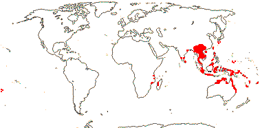
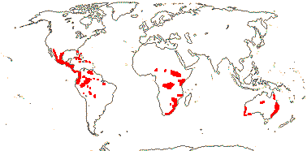

EMBRYOPSIDA Pirani & Prado
Gametophyte dominant, independent, multicellular, not motile, initially ±globular; showing gravitropism; acquisition of phenylalanine lysase [PAL], microbial terpene synthase-like genes +, triterpenoids produced by CYP716 enzymes, phenylpropanoid metabolism [lignans +, flavonoids + (absorbtion of UV radiation)], xyloglucans in primary cell wall, side chains charged; plant poikilohydrous [protoplasm dessication tolerant], ectohydrous [free water outside plant physiologically important]; thalloid, leafy, with single-celled apical meristem, tissues little differentiated, rhizoids +, unicellular; chloroplasts several per cell, pyrenoids 0; glycolate metabolism in leaf peroxisomes [glyoxysomes]; centrioles/centrosomes in vegetative cells 0, microtubules with γ-tubulin along their lengths [?here], interphase microtubules form hoop-like system; metaphase spindle anastral, predictive preprophase band + [with microtubules and F-actin; where new cell wall will form], phragmoplast + [cell wall deposition centrifugal, from around the anaphase spindle], plasmodesmata +; antheridia and archegonia jacketed, surficial; blepharoplast +, centrioles develop de novo, bicentriole pair coaxial, separate at midpoint, centrioles rotate, associated with basal bodies of cilia, multilayered structure + [4 layers: L1, L4, tubules; L2, L3, short vertical lamellae] (0), spline + [tubules from L1 encircling spermatid], basal body 200-250 nm long, associated with amorphous electron-dense material, microtubules in basal end lacking symmetry, stellate array of filaments in transition zone extended, axonemal cap 0 [microtubules disorganized at apex of cilium]; male gametes [spermatozoids] with a left-handed coil, cilia 2, lateral; oogamy; sporophyte multicellular, cuticle +, plane of first cell division transverse [with respect to long axis of archegonium/embryo sac], sporangium and upper part of seta developing from epibasal cell [towards the archegonial neck, exoscopic], with at least transient apical cell [?level], initially surrounded by and dependent on gametophyte, placental transfer cells +, in both sporophyte and gametophyte, wall ingrowths develop early; suspensor/foot +, cells at foot tip somewhat haustorial; sporangium +, single, terminal, dehiscence longitudinal; meiosis sporic, monoplastidic, MTOC [MTOC = microtubule organizing centre] associated with plastid, sporocytes 4-lobed, cytokinesis simultaneous, preceding nuclear division, quadripolar microtubule system +; wall development both centripetal and centrifugal, 1000 spores/sporangium, sporopollenin in the spore wall laid down in association with trilamellar layers [white-line centred lamellae; tripartite lamellae]; nuclear genome size [1C] <1.4 pg, main telomere sequence motif TTTAGGG, LEAFY and KNOX1 and KNOX2 genes present, ethylene involved in cell elongation; chloroplast genome with close association between trnLUAA and trnFGAA genes [precursors for starch synthesis], tufA gene moved to nucleus; mitochondrial trnS(gcu) and trnN(guu) genes +.
Many of the bolded characters in the characterization above are apomorphies of subsets of streptophytes along the lineage leading to the embryophytes, not apomorphies of crown-group embryophytes per se.
All groups below are crown groups, nearly all are extant. Characters mentioned are those of the immediate common ancestor of the group, [] contains explanatory material, () features common in clade, exact status unclear.
STOMATOPHYTES
Abscisic acid, L- and D-methionine distinguished metabolically; pro- and metaphase spindles acentric; sporophyte with polar transport of auxins, class 1 KNOX genes expressed in sporangium alone; sporangium wall 4≤ cells across [≡ eusporangium], tapetum +, secreting sporopollenin, which obscures outer white-line centred lamellae, columella +, developing from endothecial cells; stomata +, on sporangium, anomocytic, cell lineage that produces them with symmetric divisions [perigenous]; underlying similarities in the development of conducting tissue and of rhizoids/root hairs; spores trilete; shoot meristem patterning gene families expressed; MIKC, MI*K*C* genes, post-transcriptional editing of chloroplast genes; gain of three group II mitochondrial introns, mitochondrial trnS(gcu) and trnN(guu) genes 0.
[Anthocerophyta + Polysporangiophyta]: gametophyte leafless; archegonia embedded/sunken [only neck protruding]; sporophyte long-lived, chlorophyllous; cell walls with xylans.
POLYSPORANGIOPHYTA†
Sporophyte well developed, branched, branching apical, dichotomous, potentially indeterminate; hydroids +; stomata on stem; sporangia several, terminal; spore walls not multilamellate [?here].
TRACHEOPHYTA†
Vascular tissue + [tracheids, walls with bars of secondary thickening].
EXTANT TRACHEOPHYTA / VASCULAR PLANTS
Sporophyte with photosynthetic red light response, stomata open in response to blue light; plant homoiohydrous [water content of protoplasm relatively stable]; control of leaf hydration passive; plant endohydrous [physiologically important free water inside plant]; (condensed or nonhydrolyzable tannins/proanthocyanidins +); xyloglucans with side chains uncharged [?level], in secondary walls of vascular and mechanical tissue; lignins +; stem apex multicellular, with cytohistochemical zonation, plasmodesmata formation based on cell lineage; tracheids +, in both protoxylem and metaxylem, G- and S-types; sieve cells + [nucleus degenerating]; endodermis +; leaves/sporophylls spirally arranged, blades with mean venation density ca 1.8 mm/mm2 [to 5 mm/mm2], all epidermal cells with chloroplasts; sporangia adaxial, columella 0; tapetum glandular; ?position of transfer cells; MTOCs not associated with plastids, basal body 350-550 nm long, stellate array in transition region initially joining microtubule triplets; suspensor +, shoot apex developing away from micropyle/archegonial neck [from hypobasal cell, endoscopic], root lateral with respect to the longitudinal axis of the embryo [plant homorhizic].
[MONILOPHYTA + LIGNOPHYTA]Sporophyte endomycorrhizal [with Glomeromycota]; growth ± monopodial, branching spiral; roots +, endogenous, positively geotropic, root hairs and root cap +, protoxylem exarch, lateral roots +, endogenous; G-type tracheids +, with scalariform-bordered pits; leaves with apical/marginal growth, venation development basipetal, growth determinate; sporangium dehiscence by a single longitudinal slit; cells polyplastidic, MTOCs diffuse, perinuclear, migratory; blepharoplasts +, paired, with electron-dense material, centrioles on periphery, male gametes multiciliate; chloroplast long single copy ca 30kb inversion [from psbM to ycf2]; mitochondrion with loss of 4 genes, absence of numerous group II introns; LITTLE ZIPPER proteins.
Sporophyte woody; stem branching lateral, meristems axillary; lateral root origin from the pericycle; cork cambium + [producing cork abaxially], vascular cambium bifacial [producing phloem abaxially and xylem adaxially].
SEED PLANTS† Back to Main Tree
Plants heterosporous; megasporangium surrounded by cupule [i.e. = unitegmic ovule, cupule = integument]; pollen lands on ovule; megaspore germination endosporic [female gametophyte initially retained on the plant].
Age. The age for this node is estimated to be around (382-)374(-367) m.y.a. (Silvestro et al. 2015), indeed, not that long (within 70 m.y.) after the origin of embryophytes (Cooper et al. 2012 and references).
Evolution: Divergence & Distribution. Characters to be placed at this node and those at the extant seed plant node have not been clearly distinguished.
EARLY SEED PLANT EVOLUTION (very much under development)
Evolution: Divergence & Distribution. Niklas et al. (1983) noted that there was a marked increase in land plant diversity at the end of the Devonian through the Carboniferous and Permian, mainly the result of diversification of pteridophytes (ferns and lycopods), although gymnosperms were slowly diversifying through this period. Cascales-Miñana (2015) suggested that diversity increase through the Mississippian could be understood as a series of gradually increasing peaks which represented within-lineage diversification events, not key innovations, although there was a hiccup in the mid-Devonian. Towards the end of the Devonian ca 372 m.y.a. until 360 m.y.a. at the Frasnian-Famennian boundary there were notable extinction events although there was no particular negative affect on vascular plants (Cascales-Miñana & Cleal 2014); Silvestro et al. (2015) noted that the extinction rate of spore-bearing vascular plants, which had been high, dropped markedly after this period but that overall net diversification rates for vascular plants across this whole period were high.
The origins of extant seed plants, the focus of this site, are to be sought in mid-Devonian lignophytes, progymnosperms like Archaeopteridales and Aneurophytales. These plants usually have complex leaves and well-developed secondary thickening with much parenchyma mixed in with tracheids (e.g. Beck 1962; Carluccio et al. 1966). In some early taxa the leaves proper may have been small, although the branch systems as a whole may have been flattened; there are no obvious leaf traces. The origin of a stele more like that of extant seed plants can be seen in taxa in which the solid central vascular tissue is ridged and dissected into vertical columns, pith developing. Ultimately the vascular system came to consist of sympodia terminating in leaves (the ultimate portion being the leaf trace), the other part of the sympodia continuing on up the stem as reparatory strands (e.g. Beck 1962; Kumari 1963; Namboodiri & Beck 1968a-c; Stewart & Rothwell 1993 for a good summary). Baucher et al. (2007) discuss the evolution of secondary thickening.
When the megaphylls that characterise nearly all seed plants, fossil and extant, evolved is unclear, and they seem to have evolved several times (e.g. Tomescu 2009; Tomescu et al. 2014). Floyd and Bowman (2010) compared gene expression patterns in shoots and leaves of seed plants, suggesting that the marginal blastozones of leaves and the shoot apical meristem may be similar in some respects, consistent with the hypothesis that seed plant megaphylls/leaves could represent a modified branch system. It remains an open question whether or not seed plant megaphylls arose in parallel with those of ferns (Boyce 2005a summarizes earlier literature, 2008a; Corvez et al. 2012), or, importantly, whether the issue should even be conceptualized in this way (Kaplan 1997, vol. 3: chap. 19, 2001); see also [Monilophyta + Lignophyta] for more on this topic.
Heterospory has evolved several times in land plants (e.g. Bateman & DiMichele 1994; Qiu et al. 2012). Seed plants are heterosporous, and spore-bearing and photosynthetic leaves seem to be quite different, while in other hetersporous vascular plants there is no fundamental dissimilarity between the two (e.g. Kaplan 1997, vol. 3: chap. 19; Boyce 2005b). In some some Upper Devonian plants mega- and microspores were apparently mixed in a single sporangium (= anisopory: some Aneurophytales), while the megasporangia of Archaeopteris produced several megaspores (Bateman & DiMichele 1994). Megaspores are not always larger than microspores, although seeds are (see below).
Extant seed plants are distinctive because they usually have only a single megaspore per megasporangium (see Boyce 2005b); there are a maximum of four megaspores per megasporangium, three of which abort (Kenrick & Crane 1997). The ovule includes the megasporangium proper, the nucellus being the megasporangium wall, and one or more integuments that more or less enclose it (they are vascularized in pteridosperms in particular and may be lobed - Taylor et al. 2009). The megaspore germinates while still in the ovule and on the mother plant. The egg/ovum that develops from the megaspore is fertilized when in the ovule, and the developing embryo receives its nutrition from the female gametophyte in the ovule, although directly or indirectly it comes from the parental sporophyte. These basic relationships are the same in all extant seed plants: The seed is a fertilized ovule, and it contains a zygote/embryo, the beginning of the next generation sporophyte, which is more or less surrounded by gametophytic reserve tissue, and this in turn by the seed coat, the integument of the parental sporophyte. Bateman and DiMichele (1994: esp. fig 13) carefully dissected out the separate elements involved in heterospory and ovule production. Initial embryo development in other heterosporous land plants is entirely dependent on the gametophyte, while in flowering plants the gametophyte is very reduced and its function is taken over by the endosperm or perisperm.
Archaeopteridales flourished from about 377 m.y.a., but were diminishing greatly by the beginning of the Carboniferous ca 363 m.y.a. (Algeo et al. 2001). Ovules are known from the Devonian onwards (Stewart & Rothwell 1993; Kenrick & Crane 1997; Cleal et al. 2009 and references); some Archaeopteridales from ca 365 m.y.a. had a lagenostome, a tubular projection of the nucellus with a central column that was probably involved in pollen capture, and pollination/fertilization mechanisms were probably quite like those of extant gymnosperms. The ovules of Runcaria, a seed plant probably to be assigned to Aneurophytales and from the middle Devonian of some 385 m.y.a., lacked a lagenostome and Gerrienne et al. (2004) suggested that the antherozoids reached the megagametophyte by lysis of the megasporangium wall, which forms a long, terminal projection in this plant.
Pollen is produced in microsporangia. In seed ferns, pteridosperms, and their immediate relatives pollen probably germinated via the adaxial surface of the microspore and the tetrad of megaspores is linear (Taylor et al. 2009). It is likely that some early conifers and Cordiatales had microspores whose development was endosporic (e.g. Friedman & Gifford 1997); there is likely to have been zoidogamy, fertilization by motile male gametes.
In the Carboniferous in particular there was a considerable variety of gymnosperms (for gymnsopermy, see also Tomlinson 2012), including the seed ferns with their fern-like leaves and ovules, indeed, although the Carboniferous has been called the age of ferns, perhaps as accurately it could be called the age of seed ferns. Recent studies are helping to clarify their morphology, although is is difficult to assemble whole organisms from dispersed leaves, ovules, and trunks (Taylor et al. 2006 and references, also other papers in J. Torrey Bot. Soc. 133(1). 2006; Taylor et al. 2009), and how the ovule was attached to the plant is not easy to establish (e.g. Spencer et al. 2012). Ovule morphology alone does not indicate the identity of the organism - pteridosperm or coniferophyte - bearing the ovule (Seyfullah et al. 2010).
A link between fossil gymnosperms, especially Cordiatales, and extant conifers has been suggested, the short shoot made up of bract + ovuliferous scale of most extant members being linked to more complex and obviously shoot-like structures of fossil taxa (Florin 1951). The rather conifer-like Cordaitales and Callistophytales, which had compound pollen-bearing structures and saccate pollen, are found in the lower Carboniferous. Slightly later there are the still more conifer-like ("ancestral") Voltziales that lacked saccate pollen; they have been associated with Cupressaceae (Rothwell et al. 2011 and references; Taylor et al. 2009: survey of early gymnosperms). In the late Carboniferous-Permian walchian conifers, a paraphyletic group in which cladoptosis was common, were prominent in tropical vegetation (Looy 2013). Cheirolepidaceae, recently found in the northern hemisphere (Oregon, USA), have been associated with Araucariaceae and Podocarpaceae (Stockey & Rothwell 2013). The so-called coniferophytes are often distinguished from conifers, although what the two contain and their relationships are both unclear (Rothwell & Mapes 2001); phylogenetic studies are certainly not suggesting a simple answer (e.g. Crane 1985b; Doyle & Donoghue 1986a, 1992; Rothwell & Serbet 1994; Doyle 1996; etc.).
Cycadophytes include Cycadales and Bennettitales, unrelated groups (Condamine et al. 2015 and references). Ryberg et al. (2007) emphasise the large amounts of secondary phloem that persist in a cycad stem, presumably because the cork cambium is not very active; some larger cycads have fibres in tangential bands in this phloem. Both characters are common in the Bennettitales, probably parallelisms.
Ecology & Physiology. This section includes quite a bit of general seed plant evolution, and there is also mention of extinctions, mass or otherwise, that have been popular subjects of discussion for 40 years or more (e.g. Raup & Sepkoski 1984), although not only are they not clearly defined, they are measured in various ways, the scale may be local or global, and both their cause(s) and any connection with diversification and the evolution of novelty are difficult to establish.
For good general summaries of fossils and what they might disclose about plant physiology in the past, see Boyce (2009) and Kenrick and Strullu-Derrien (2014: esp. roots). The bottom line is that seed plants in particular, and plants with secondary thickening in general, have long helped change the global environment (e.g. Beerling et al. 2001; Feild & Edwards 2012) and are involved in a number of feedback loops, many positive, between plants, changing climates and atmospheric CO2 concentration (e.g. Berner 1999; Beerling 2005a; Beerling & Berner 2005). However, it has recently been suggested that back in the Late Ordovician ca 450 m.y.a. and with an atmospheric CO2 concentration about eight times today's levels, land plant vegetation, bryophytes and lichens, supported a level of chemical weathering two to three times that of today's vegetation, P moved to the sea, and overall there was a draw-down of atmospheric CO2 that may have helped precipitate glaciation then (Porada et al. 2016). As seed plant-dominated vegetation developed, there was more efficient recycling of nutrients like P and net primary productivity greatly increased and weathering decreased (Porada et al. 2016).
Secondary thickening has evolved several times, but in most cases the cambium cut off only a small amount of vascular tisue, sometimes only a little xylem to the inside and still less if any phloem to the outside, and only rarely were substantial amounts of both phloem and xylem produced. A number of early land plants had some sort of secondary thickening. Thus fossils from Canada and France from up to ca 407 m.y. (Early Devonian), otherwise quite like Psilophyton, have secondary xylem with rays and tracheids (Gerrienne et al. 2011; Hoffman & Tomescu 2011, 2013: see also Donoghue 2005; Rothwell et al. 2008b for wood evolution in general). The middle Devonian pseudosporochnalean Calamophyton, perhaps related to monilophytes, was a small tree, and the primary stem increased in width for up to 2 m (did the apical meristem increase in size at the same time?); there was secondary growth towards the base of the stem/trunk. The primary stem, at up to 10 cm across, was very stout; the branches themselves branched dichotomously and bore small appendages/leaves and were shed as units (= cladoptosis) (Giesen & Berry 2013). Strullu-Derrien et al. (2014a) examined the hydraulic properties of a very early wood with secondary thickening, but with much thinner stems. For further discussion about the evolution of growth forms and xylem in lignophytes, see also Rowe and Speck (2005: cambium as a nascent innovation), Gerrienne et al. (2011, 2016), Stein et al. (2012).
The first lignophytes were small, and it was probably the need for increased water conductance in response to decreasing CO2 concentration (the stomata would have to be open more), rather than any need for support, that drove the early evolution of a vascular cambium (Sperry 2003; Gerrienne et al. 2011; see also Stein et al. 2012). Indeed, support for some early trees came from lignified sclerenchymatous tissue at the periphery of the stem (Sperry 2003 and references). Support for the stem in extant monilophytes is provided largely by the lignified stereome, in the outer cortex, and tracheids are relatively thin-walled, while in gymnosperms thick-walled tracheids provide much of this support (e.g. see Rowe et al. 2004; Pitterman et al. 2011; Klepsch et al. 2015). It was support provided by vascular tissue that facilitated the size increase of land plants evident from the Middle Devonian ca 385 m.y.a. onwards (e.g. Beerling et al. 2001).
Mid-Devonian forests are surprisingly complex, with the early seed plant group Aneurophytales being scramblers up much larger pseudosporochnalean trees (of uncertain affinities, see above: Stein et al. 2007, 2012). Certainly by the later Devonian there were true lignophytes about 1 m d.b.h., and up to 2 m across by the lowermost Carboniferous (Algeo et al. 2001; Galtier & Meyer-Berthaud 2006). Although these lignophytes were not necessarily taller than the tree lycopsids of e.g. the Carboniferous, they were stouter, and they also had well developed true roots, the fine roots presumably having root hairs. In Archaeopteridales, early lignophytes, there was cladoptosis (Algeo et al. 2001; Galtier & Meyer-Berthaud 2006). By the lower Carboniferous there was a variety of lignophytes, some smaller, manoxylic and with a protostele (seed ferns), and others (much) larger, pycnoxylic and with an eustele, sometimes with a massive pith, etc. (identity uncertain: Galtier & Meyer-Berthaud 2006).
The evolution of megaphylls, found in most seed plants, may have been a two-stage process. Megaphylls are to be found in the Mid- to Late-Devonian progymnosperm, Archaeopteris, and also in the Late Devonian-early Mississippian pteridosperms (Osborne et al. 2004). Understanding the evolution of stomatal morphology and functioning and how these interacted with photosynthesis and water uptake is a key to understanding the success of lignophytes, although it is difficult to pinpoint exactly when some of the changes took place (McAdam & Brodribb 2011, see Fig. 4, Cycadaceae not examined, 2013). [Rework]
A major problem that megaphylls face is overheating. Variables here are leaf blade size, atmospheric CO2 concentration, air and leaf temperature, and stomatal density (e.g. Hetherington & Woodward 2003; Osborne et al. 2004; Franks & Beerling 2009). As atmospheric CO2 decreased in the Devonian, stomatal density increased to allow more CO2 uptake, and transpiration also increased, but atmospheric temperature was decreasing along with the decrease in CO2 concentration, and this would tend to decrease transpirational loss (Osborne et al. 2004; Franks & Beerling 2009a). The possibility that megaphylls might overheat was reduced because of evaporative cooling caused by transpiration as well as lamina dissection (Beerling et al. 2001; Beerling 2005a and references). The well-developed vascular system produced by lignophyte secondary thickening would permit increased transpiration of these dorsi-ventrally flattened photosynthetic leaves/megaphylls that facilitated CO2 uptake (Raven & Edwards 2001; Beerling et al. 2001; see also below).
If evidence from extant land plants is any guide, how stomatal opening and closure is controlled has changed over time (see also stomatophytes and extant tracheophytes). Stomatal closure in ferns - in whatever habitat they grow, although many prefer moister conditions - occurs when the leaf still has a relatively high water potential when compared with angiosperms not growing in shade (Brodribb & Holbrook 2004). Furthermore, the water potential of the leaf at which irreparable damage occurs is only slightly lower than that at which stomatal closure occurs (McAdam & Brodribb 2013). Stomata of "bryophytes", lycophytes and ferns do not respond to abscisic acid (but c.f. e.g. Chater et al. 2011), and control over stomatal opening is passive (McAdam & Brodribb 2011, 2012, 2013; Haworth et al. 2013). Indeed, in seed plants there are two pathways in which there is antagonism between giberellic acid and abscisic acid and which have a common abscisic acid signalling cascade, these are involved in stomatal closing (here a particular type of anion channel has become part of the mechanism) and in seed dormancy in seed plants and spore dormancy and in the determination of the sex of the gametophyte in ferns (McAdam et al. 2016).
In seed plants stomatal control is active. On drying of the leaf, the stomata close more or less immediately, but open more slowly, being sensitive to the enhanced levels of abscisic acid (Brodribb & McAdam 2010; McAdam & Brodribb 2012a). In Metasequoia, at least, initial stomatal response to water stress on drying of the leaf is passive, as in ferns and lycophytes; subsequently, abscisic acid-mediated behaviour became apparent (McAdam & Brodribb 2014). When light is not saturating, the ratio of photosynthesis to water loss decreases in ferns with high photosynthetic rates, while in seed plants it remains about the same (McAdam & Brodribb 2012b). Such factors may have been involved in the success and ecological dominance of early seed plants as the late-Palaeozoic environments became drier (McAdam & Brodribb 2012b, 2013).
Stomatal conductivity of seed plants other than flowering plants does not respond to elevated CO2 concentrations in the atmosphere (Brodribb et al. 2009; McAdam & Brodribb 2011) or to blue light (Doi & Shimizaku 2008). In angiosperms, the subsidiary cells lose turgor first if water loss is rapid, and this causes guard cells to open the stomatal aperture (Brodribb & McAdam 2010). This difference in control, much more flexible in angiosperms, is related to the fact that angiosperm leaves may also have a relatively higher amount of water still available after stomata close and before leaf death occurs than in ferns or lycophytes.
Early seed plants, monilophytes, etc., have leaf blades with a low venation density, ca 3 mm/mm2 or less, and the venation is not closed and reticulate, but dendritic (open) and often dichotomizing, and this is true of extant members of these clades. Seed ferns like Glossopteridales and Giganopteridales did have reticulate venation (the veins in some of the latter may even have a quasi-hierarchical organization), and this might be linked with the development of a drier climate (Roth-Nebelsick et al. 2001). Stomatal density and size are also important variables here (e.g. Osborne et al. 2004), and stomatal density varies inversely with size (Franks et al. 2014). Stomata of Archaeopteris, at about 62±3µm long, were large, stomata reaching ca 78µm long in a few taxa (Hetherington & Woodward 2003), but large stomata at low density would allow less evaporative cooling. Stomatal density is negatively and size is positively correlated with atmospheric CO2 concentrations (e.g. Franks & Beerling 2012: esp. Fig. 3), and venation density may also be inversely correlated with CO2 concentration, although the variation is not extensive (2-3 mm/mm2, "large fluctuations": Retallack 2005). There seem to have been no major changes in plant productivity despite major changes in CO2 concentration (Boyce & Zwieniecki 2012 and refs, c.f. e.g. Franks & Beerling 2009a), certainly, there is no simple positive correlation. These aspects of seed plant evolution are discussed further later.
Roots are also implicated in these early changes via a complex series of feed-back loops (e.g. Raven & Edwards 2001; Beerling & Berner 2005). Even early lignophytes are likely to have been endomycorrhizal, with vesicular-arbuscular mycorrhizae (VAM) (Quirk et al. 2012 and references; Maherali et al. 2016: seed plants). The roots of lignophytes penetrate some one metre or so into the ground, so greatly facilitating weathering by enabling carbon dioxide to penetrate to greater depths; roots and AM also produce chelates and organic acids, some photosynthate moves directly from the root tip to the soil, more is taken up by the fungus (Kaiser et al. 2015), while decay of organic litter produces carbonic and other organic acids, and all these facilitate plant micronutrient uptake and rock breakdown (Berner 1997; Algeo et al. 2001; Raven & Edwards 2001; Beerling 2005a; Taylor et al. 2009; Kenrick et al. 2012). AM cause calcium silicate dissolution from basalt, although this is reduced at lower atmospheric CO2 concentrations (Quirk et al. 2014).
This plant/fungus-aided chemical weathering of rocks entails the loss of atmospheric CO2 as it reacts with rock minerals, with rock silicates being broken down and dissolved. The basic equation is as follows (Raven & Edwards 2001: p. 388, equation 1):
CaMg(SiO3)2 + 4CO2 + 6H2O → Ca++ + Mg++ + 4HCO3- + 2Si(OH)4
And Rothman (2001) suggests on overall balance
CaSiO3 + CO2 ⇔ CaCO3 + SiO2
where left to right is weathering, and right to left metamorphism, magmatism and vulcanism.
Appreciable quantities of silica are to be found in many vascular plants (Trembath-Reichert et al. 2015). Ultimately bicarbonates and silicates are carried to the sea where they precipitate out as silica, limestome or dolomite over a period of a few million years, while silicates are also the basis of terrestrial clays. The return of CO2 to the atmosphere is a complex and often far longer process (Raven & Edwards 2001; Quirk et al. 2012; Gibling et al. 2014).
Overall, photosynthesis and the sequestration of carbon by plants increased causing major changes in global carbon and nutrient cycling and energy flow (Qiu et al. 2012; Kenrick et al. 2012). For the last 22 m.y. increasing plant diversity increases weathering rates and atmospheric CO2 levels fall, a process that cumulated in the current glacial period (Rothman 2001: the ca 300 m.y. dip in atmospheric CO2 is not explained by this model). Transpiration of arborescent land plants can lead to increased rainfall, and roots would help retain the clay-rich soil, improve its structure and so increase the retention of water, and this would extend the period over which rock weathering can proceed and the rate of weathering would increase (Berner 1997; Retallack 1997a; Beerling 2005a; Boyce & Lee 2011; Gibling et al. 2014; c.f. Taylor et al. 2009 in part). Roots and organic material together also profoundly altered terrestrial drainage patterns. Rivers with shallow, braided and sandy channels, sheet-braided river systems, were largely replaced by more deeply channeled and often meandering rivers with stable banks beginning at the end of the Silurian ca 420 m.y.a. (Gibling et al. 2014).
Atmospheric carbon dioxide fell precipitously during the Devonian (Kenrick et al. 2012), all told, some 90% over the late Palaeozoic. Thus estimates of the carbon dioxide concentration in the atmosphere at the end Silurian are 4-20 times the pre-industrial concentration of 270 p.p.m.V, but only 3-13 times this by the end of the Devonian, a drop that may be connected with the repeated origin of photosynthetically more efficient megaphylls by that time (D.-M. Wang et al. 2015). By the Late Carboniferous and in particular Early Permian CO2 concentrations were close to modern values. At the same time, there was increasing oxygen in the atmosphere, and fires are known from the Silurian and certainly from the lower Devonian (Edwards & Richardson 2004; Scott & Glasspool 2006; Belcher et al. 2010b; Glasspool & Scott 2010). The oxygen concentration of the atmosphere probably reached about 15% or even close to modern levels by the lower Devonian ca 200 m.y.a. and so was able to support burning (Berner 2001). Indeed, modelling suggests net primary productivity of early bryophytes as almost one third present levels by around 445 m.y.a., and phosphorus in particular was obtainined by these early plants by increased rock weathering perhaps enhanced by their fungal associates (Lenton et al. 2016). There are coaly shales from as early as the Early Devonian suggesting that there were extensive peatlands by 410-400 m.y.a. (Lenton et al. 2016; see also records of Sphagnum-like fossils from as early as 455 m.y.a.). As atmospheric oxygen concentration increased in the Devonian it may have allowed the evolution of animals with larger bodies; the evolution of placoderm arthrodire fish, some of which reached ca 10 m in length, has been linked to the rise in oxygen concentration in the sea (Dahl et al. 2010), and there were also changes in pyrite deposition, etc. (Lenton et al. 2016). Atmospheric oxygen concentration reached a high of about 30% towards the end Carboniferous/beginning Permian during the Late Palaeozoic Ice Age or LPIA which began ca 310 m.y.a. (e.g. Shi & Waterhouse 2010). There is evidence of much fire activity in the Early Permian, and perhaps paradoxically fires were particularly extensive in wetland mires (e.g. Scott & Glasspool 2006), less so in seasonally-dry environments where conifers like Walchia were common - there cladoptosis may have reduced the extent/severity of fires (Looy 2013). At ca 24% atmospheric oxygen the chance of self-sustained propagation of fires reaches 100% (Belcher et al. 2010b). Later, gigantism, e.g. of dragonflies and in particular fusilinid foraminferans, has been linked to increased oxygen concentrations (Payne et al. 2012). All in all, this was a time when atmospheric CO2 concentrations were low and oxygen concentrations were high.
The extinct tree-like lycopsids that flourished for around 100 m.y. from the end of the Carboniferous to the beginning of the Permian, a time when atmospheric CO2 concentrations were low and oxygen concentrations were high. The plants had air canals that permeated both above- and below-ground parts of the plants, probably enabling oxygen to move to the roots and allowing the plants to grow in anoxic swamps (Green 2010); the oxygen was used up in respiration, while CO2 produced by the plant remained in the plant and also moveed into the plant from the anoxic CO2-rich soil, ultimately going to the leaves, where it was used up in photosynthesis. However, although oxygen movement may have been facilitated, a pad of tissue at the base of the rootlets cut off their air spaces from those of the stigmarian roots, so overall CO2 movement and photosynthesis in the plant are likely to have been little affected (Boyce & DiMichele 2015). Robinson (1990) emphasized the very high periderm:wood ratio of lycopsids, common through the Carboniferous, an estimated 8-20:1 in arborescent lycopsids in particular, and he thought that late Devonian plants were about 40% lignin, a percentage that subsequently declined. However, although lycopsids did have very thick bark, which was their main support structure - some reached 30 m tall or so - evidence suggests that this bark was suberized rather than lignified (Boyce & DiMichele 2016).
Interestingly, litter from extant ferns, lycophytes and bryophytes is slow to decompose compared with that of gymnosperms and especially angiosperms (Cornwell et al. 2008), while mosses, and in particular Sphagnum, which lack lignin are also slow decomposers (Turetsky et al. 2008). The wood of angiosperms and gymnosperms is high in lignin, major and complex components of the secondary cell walls of the xylem in particular of vascular plants, and its breakdown is an important element in the carbon cycle. Millipedes, diversifying by ca 410 m.y.a. (Misof et al. 2014), were early detritivores, however, they cannot destroy lignin, indeed, secondary metabolites protecting against herbivores may have evolved about this time, and they might decrease CO2 produced by the respiration of organisms that might otherwise have helped decompose the plants (Retallack 1997a). Termites, some species of which have associated bacteria that can break down lignin, did not evolve until much later, perhaps in the Jurassic (Bignell et al. 2011), and there do not appear to have been lignin-decomposing fungi in the Carboniferous (Floudas et al. 2012).
DiMichele (2014) discussed the dynamics of coal-age tropical vegetation. He pointed out that even in places where vegetation indicated wetter conditions, there were periods when plants that preferred drier conditions predominated, and overall, there was a trend towards drier conditions. During the Pennsylvanian (359-299 m.y.a.) arborescent lycopsids became less common and marattialean tree ferns more common (the latter at least temporarily), and Cordaitales were replaced by conifers, the latter, and also early cycads, preferring the seasonally drier conditions that were becoming commoner (DiMichele 2014; see also Cleal et al. 2012). Burnham (2009) noted the relative abundance of climbers at this time, although they became much less common, remaining so until the Cretaceous or Caenozoic. Some scrambling or climbing seed ferns like Callistophyton, Lyginopteris, and in particular Medullosa, had long and wide - from 65-237 µm across, the upper part of this range in Medullosa, to ca 28 mm long and 150 µm across - tracheids and their water conductivity was probably on a par with that of some extant angiosperms with vessels (Wilson & Knoll 2010; Hacke et al. 2015). However, overall plant diversity in tropical Carboniferous wetlands was nothing like that of most contemporary tropical ecosystems, being only around 120 species in areas up to 105 km2 (Cleal et al. 2012).
Large amounts of carbon accumulated in the anoxic Carboniferous swamps (e.g. Nelsen et al. 2016 and references) and was ultimately converted into the massive coal deposits that characterize rocks from the later Carboniferous; this removed the carbon from circulation. Prior to iii.2016 versions, a good explanation for this coal seemed to be that the absence of organisms that caues lignin deposition was a major factor in allowing the carbon to build up, lignin-decaying fungi evolving perhaps 300 m.y.a. (Robinson 1990; Nagy et al. 2016 and references). However, Hibbett et al. (2016) noted that the high lignin content of plants then is questionable, the timing of the evolution of lignin-decaying fungi was uncertain, and there are many more components of plant cells than just lignin and many different kinds of fungal decomposers (Goodell et al. 2008). It may be more a combination of everwet conditions in the tropics allowing the development of extensive carboniferous forests along with burial on a very large scale of the carbon-rich soils produced by these forests (Beerling 2005a); C-rich sediments were being laid down in depositional basins formed by the orogenic movements that were producing Pangaea and then coverted to coal (Nelsen et al. 2016). Another contributing factor to CO2 levels may have been relatively low continental arc volcanism, and hence relatively little CO2 production, at this time (McKenzie et al. 2016). As mentioned, conditions became drier and the orogenic context changed. Furthermore, is not as if there have been no coals produced in the last 100 million years, despite the activities of lignin-decomposing fungi (Nelsen et al. 2016), nevertheles, the activities of fungi that decompose organic matter are certainly important in current ecoystems (e.g., see EctomycorrhizalPlants below).
The largely southern hemisphere supercontinent Pangaea had formed by around 320 m.y.a., and this would have increased chemical weathering and so aided in the CO2 decrease. The Permo-Carboniferous Ice Age/Late Palaeozoic Ice Age (LPIA) began in the late Carboniferous and is dated to about 320-290 m.y.a., perhaps persisting to ca 280 m.y.a. in east Australia (Montañez et al. 2007). At the end of the Carboniferous 305-295 m.y.a. there were two or more extinction events, including the ecological collapse of the Euramerican tropical swamp forests that was associated with a drying climate (Sahney et al. 2010). This was perhaps the first animal extinction event accompanied by notable vascular plant extinctions (Cascales-Miñana & Cleal 2014: family the unit of analysis), although it was not picked up by Silvestro et al. (2015: genus the unit).
Reptile diversity and specialization (e.g. appearance of herbivores) increased markedly over the earlier Permian in particular (Sahney et al. 2010). In tropical western Euramerica during this time, as the climate dried and became warmer, vegetation with conifers (e.g. Walchia, see Looy 2013), cycadophytes, peltasperms and the gymnosperm Cordaites replacing Carboniferous pteridosperms and tree ferns, which did persist into the early Permian at times when precipitation was higher (Montañez et al. 2007; Retallack 2013b). Cycads, otherwise prominent Mesozoic plants, appeared at the end of the early Permian, and conifers were not to be a major feature of the vegetation until the end-Permian (Montañez et al. 2007).
The global climate oscillated greatly, with mean annual temperature increases at times of 8-10o C as is evident in rocks from both tropical and more temperate environments. Temperatures may even have become lethally hot at the equator, with equatorial sea surface temperatures (SST) approaching 40oC (the current SST is 25-30oC), and land temperatures were even higher, in places exceeding 70oC in the Permian (Zambito & Benison 2013), a remarkable figure (see also Tabor 2013). Under such conditions, the rate of photorespiration increases, and it exceeds photosynthesis above 35o C (Sun et al. 2012); 45-52o C is lethal for non-succulent leaves (Beerling et al. 2001). (Note that in large simple leaves with high venation density as in angiosperms, the high venation density helps guard agains such overheating, the evaporating water cooling the leaf - Sack et al. 2012.) Most animal and plant life would have had a hard time at 70oC. Linked with such changes, atmospheric CO2 concentrations fluctuated greatly at the end-Permian beginning Triassic around 275-210 m.y.a. varying from 300-500 to almost 8,000 p.p.m. (Algeo et al. 2001; Driese & Mora 2001; Montañez et al. 2007; Shi & Waterhouse 2010; Kaufman & Xiao 2012; Retallack 2013b). There are various ideas explaining such changes. Possibly the marine bacterium Methanosarcina acquired the ability to break down organic compounds to methane by horizontal gene transfer, a process facilitated by nickel (needed by the enzymes) produced by the Siberian Traps volcanic episode (Rothman et al. 2014); these eruptions also resulted in large amount of CO2 and other gases being discharged into the atmosphere Clarkson et al. 2015.
The Permo-Triassic boundary ca 251 m.y.a. is marked by an extinction about as severe as any in the earth's history, with about 90% (Raup & Sepkoski 1982; Vajda & Bercovici 2014). With three identifiable episodes spread over 20 m.y. and perhaps diachronic in nature it was a rather protracted and complex affair (Sahney & Benton 2008; Cantrill & Poole 2012; Clarkson et al. 2015; Vajda & Bercovici 2014). This extinction, the second to have affected both plants and animals (Lascales-Miñana & Cleal 2014: family-level analysis; see also Schobben et al. 2015: major changes in the marine environment: Roopnarine & Angielczyk 2015: community stability), negatively affected sporing vascular plants, seed ferns and conifers, although their origination rates were quite high during this period (Silvestro et al. 2015). There was a world-wide end-Permian "coal gap", a ca 7 m.y. period when sediments with coal deposits were absent, perhaps because of the extinction of peat-forming plants (Retallack et al. 1996; McElwain & Punyasena 2007; Sun et al. 2012). Glossopterids, giganopterids, tree lycopsids and Cordaites all became extinct (Retallack et al. 2006; Retallack 2013b). Atmospheric oxygen levels fell to somewhat below those current immediately after the end of the Permian, sometimes being only 12.5% in the Triassic, but they then increased and have shown only moderate changes since (e.g. Scott & Glasspool 2006; Labandeira 2007). Throughout the southern hemisphere cool forest area there was increased weathering with rivers becoming higher-energy in an environment that had become more unstable (McElwain & Punyasena 2007 for cautionary comments), the soils were more infertile (oligotrophic), and deciduous (= Glossopteris) forest was replaced by evergreen forest that had a lower albedo (Retallack & Krull 1999; Retallack et al. 2006 for more details; Gibling et al. 2014). Overall there was extensive die-off of coniferous forest, Walchiaceae, for example, going extinct (Looy et al. 1999; Grauvogel-Stamm & Ash 2005), soil erosion, and loss of peat forests.
Grauvogel-Stamm and Ash (2005) emphasize the length of the recovery period of the Triassic vegetation after the Permo-Triassic episode, up to 14 m.y. in total, 1-2 m.y. being the normal time after such events (e.g. McElwain & Punyasena 2007). Fluctuations in both temperature and atmospheric CO2 concentrations continued into the Triassic. High temperatures at higher latitudes were accompanied by increases of lycopsid spores and plants with stout stems, otherwise plants like conifers, seed ferns and ferns were common (Retallack 2013b). The heterosporous lycopsid Pleuromeia sternbergii or other lycopsids dominated for 5 million or more years early in the Triassic before being replaced by i.a. conifers like Voltzia in which fertilization was probably by siphonogamy (Looy et al. 1999; Looy 2013). These conifers, thought to be related to late Permian conifers, include the almost herbaceous Aethophyllum (Grauvogel-Stamm & Ash 2005); for Antarctica, see Cantrill and Poole (2012). Niklas et al. (1983) noted that this was the beginning of the period when gymnosperms dominated the flora, partly replacing pteridophytes.
Carbon dioxide concentrations then decreased and temperatures cooled somewhat, and there was an end-Triassic extinction event around 201.6 m.y. ago (McElwain et al. 2009 and Vajda & Bercovici 2014 for references; Cantrill & Poole 2012). This affected vascular plants only slightly, although the origination rate of gymnosperm clades decreased at about this time (Silvestro et al. 2015; see also Cascales-Miñana & Cleal 2014). Again there was an increase of atmospheric CO2 (about four-fold, from ca 600 to 2,100-3,000 p.p.m.) and an increase in temperature of 2.5-5o C, or locally even more, and there were extinctions/declines in standing diversity/increases in heterogeneity of community composition of both plants and animals (McElwain et al. 1999, 2007; Huynh & Poulsen 2005; Steinthorsdottir et al. 2011). The period has been characterised more by ecological rearrangement of the vegetation, but little extinction of sporomorphs, at least (Bonis & Kürschner 2012; see also Mander et al. 2010), similarly, in eastern Greenland the new community dominants were previously rare, while the previous dominants tended to become rare (McElwain et al. 2007, 2009). Reproductively specialized plants like cycads, bennettitaleans and seed ferns seem to have been particularly affected (e.g. Mander et al. 2010). This extinction can perhaps be linked to the beginning of major eruptions in the Central Atlantic Magmatic Province associated with the break-up of Pangea, perhaps because methane was released from clathrates then (McElwain et al. 2007; Bonis & Kürschner 2012); eruptions with associated spikes in atmospheric CO2 continued even when biological recovery was underway (Blackburn et al. 2013).
The high temperatures at the end of the Triassic may again have increased leaf temperatures near or above the limit of lethality. Thus species that persist across the Triassic-Jurassic boundary or first occur in the early Jurassic had notably more divided and/or narrower leaf blades compared to those of the late Triassic flora, and this would result in lower leaf temperatures than if the leaves were broad and undivided (McElwain et al. 1999; Beerling & Berner 2005). These more dissected (or smaller, narrower) leaves were also more flammable (Belcher et al. 2010a). Fire activity in parts of the Northern Hemisphere, at least, increased, despite the low atmospheric oxygen concentration (Belcher et al. 2010a). As temperatures increased, so did stomatal size and transpiration, while stomatal frequency, as well as runoff and gross erosion, decreased (Steinthorsdottir et al. 2012).
The Jurassic was a period with warm temperatures and high atmospheric CO2, and with bennettitaleans, conifers, and ferns prominent in the vegetation (Cantrill & Poole 2012). Gymnosperms like Cheirolepidaceae tend to be common in the drier interior of early Jurassic Pangea, where they might completely dominate the vegetation, while spore-bearing plants, including liverworts, were commoner around the more humid peirphery (Bonis & Kürschner 2012). But Pangea started to break up.
It is only at the end of this whole period, perhaps within the last 200 m.y., that ectomycorrhizal (ECM) relationships between plants and fungi develop. The clade including ECM truffles and relatives (ascomycetes) may have evolved as early as 185 m.y.a. (Bonito et al. 2014), while the evolution of the ECM habit in Pinaceae, the oldest extant clade of ECM plants, is around (271-)237-153(-100) m.y. - these are crown-group ages of Pinaceae, so the origin of the ECM association may well be older. For further details, see the ecophysiology of ECM plants and their evolution.
Pollination Biology & Seed Dispersal and Plant-Animal Interactions. For details, see stem-group angiosperms.
Genes & Genomes. Jiao et al. (2011) provide evidence for a genome duplication in the lineage basal to all extant seed plants, and date the peak of the age curve of the duplicated genes that it caused to (352-)349, 347(-343) m.y. in the early Carboniferous (Mississippian) - the overall age spread is from ca 400 to just over 250 m. years. Lang et al. (2010; see also Zhu et al. 2012) discuss the evolution of transcription-associated proteins, perhaps associated with genome duplications; three new protein families evolved somewhere between the lycophytes and flowering plants.
Chemistry, Morphology, etc. For the genetic control of cambium development, with the possible cooption of genes that regulate shoot apical meristem development, see Baucher et al. (2007: comparisons within angiosperms). Phloem anatomy in early seed plants is discussed by Decombeix et al. (2014).
Some early conifers and Cordiatales had microspores of a kind often called prepollen. The microspores lack a sulcus, but there are proximal trilete or monolete ridges, haptotypic marks reflecting where the spores were attached in the tetrad before it broke up. The development of the male gametophyte probably took place inside the spore, so it was endosporic, and germination occurred via these ridges (e.g. Friedman 1993; Friedman & Gifford 1997). Motile gametes are likely to have been produced (Looy et al. 1999). All extant seed plants have true pollen; here germination is distal, that is, the pollen tube grows out through the part of the pollen grain that was not adjacent to the the other members of the tetrad, and there are no haptotypic marks. Development is initially endosporic here, too; the gametes may or may not have cilia. However, the relationships between fossil plants with prepollen and those with true pollen, and extant gymnosperms, also with true pollen, are not well understood, and it is not easy to understand the evolution of the sulcus in fossil gymnosperms (Doyle 2013); distinguishing between prepollen and pollen may be of little value (Poort et al. 1996 for a review; Taylor et al. 2009).
EXTANT SEED PLANTS / SPERMATOPHYTA
Plant evergreen; nicotinic acid metabolised to trigonelline, (cyanogenesis via tyrosine pathway); microbial terpene synthase-like genes 0; primary cell walls rich in xyloglucans and/or glucomannans, 25-30% pectin [Type I walls]; lignin chains started by monolignol dimerization [resinols common], particularly with guaiacyl and p-hydroxyphenyl [G + H] units [sinapyl units uncommon, no Maüle reaction]; root stele diarch to pentarch, xylem and phloem originating on alternating radii, cork cambium deep seated; stem apical meristem complex [with quiescent centre, etc.], plasmodesma density in SAM 1.6-6.2[mean]/μm2 [interface-specific plasmodesmatal network]; eustele +, protoxylem endarch, endodermis 0; wood homoxylous, tracheids and rays alone, tracheid/tracheid pits circular, bordered; mature sieve tube/cell lacking functioning nucleus, sieve tube plastids with starch grains; phloem fibres +; cork cambium superficial; leaf nodes 1:1, a single trace leaving the vascular sympodium; leaf vascular bundles amphicribral; guard cells the only epidermal cells with chloroplasts, stomatal pore with active opening in response to leaf hydration, control by abscisic acid, metabolic regulation of water use efficiency, etc.; axillary buds +, exogenous; prophylls two, lateral; leaves with petiole and lamina, development basipetal, lamina simple; sporangia borne on sporophylls; spores not dormant; microsporophylls aggregated in indeterminate cones/strobili; grains monosulcate, aperture in ana- position [distal], primexine + [involved in exine pattern formation with deposition of sporopollenin from tapetum there], exine and intine homogeneous, exine alveolar/honeycomb; ovules with parietal tissue [= crassinucellate], megaspore tetrad linear, functional megaspore single, chalazal, sporopollenin 0; gametophyte development initially endosporic, dependent on sporophyte, apical cell 0, rhizoids 0, development continuing outside the spore; male gametophyte with tube developing from distal end of grain, male gametes two, developing after pollination, with cell walls, starch grains 0; female gametophyte initially syncytial, walls then surrounding individual nuclei; embryo cellular ab initio, suspensor short-minute, embryonic axis straight [shoot and root at opposite ends; plant allorhizic], cotyledons 2; embryo ± dormant; chloroplast ycf2 gene in inverted repeat, trans splicing of five mitochondrial group II introns, rpl6 gene absent; whole nuclear genome duplication [ζ - zeta - duplication], two copies of LEAFY gene, PHY gene duplications [three - [BP [A/N + C/O]] - copies], 5.8S and 5S rDNA in separate clusters.
Age. Early estimates of the age for crown-group seed plants range from 348-285 m.y. (Becker et al. 2000; Theißen et al. 2001; Leebens-Mack et al. 2005). Some recent molecular estimates are (366-)330, 327(-296) m.y. (Smith et al. 2010: see also their table S3), around (351-)330.3-324.3(-313.1) m.y. (Magallón et al. 2013, 2015; Naumann et al. 2013 and Iles et al. 2014 are similar), (339.4-)317.5(-306.2) m.y. (Zhang et al. 2014), and about 302 m.y.a. (Z. Wu et al. 2014) or (365.6-)337.4(-309.7) m.y.a. (Rothfels et al. 2015b). Somewhat older ages of (368-)351(-330) m.y. are suggested by Clarke et al. (2011: also other estimates) and (457-)385(-313) m.y. by Zimmer et al. (2007); P. Soltis et al. (2002) offer a variety of estimates, and see also Larsén and Rydin (2015).
Note: Boldface denotes possible apomorphies, (....) denotes a feature common in the clade, exact status uncertain, [....] includes explanatory material. Note that the particular node to which many characters, particularly the more cryptic ones, should be assigned is unclear. This is partly because homoplasy is very common, in addition, basic information for all too many characters is very incomplete, frequently coming from taxa well embedded in the clade of interest and so making the position of any putative apomorphy uncertain. Then there are the not-so-trivial issues of how character states are delimited and ancestral states are reconstructed (see above).
Evolution: Divergence & Distribution. For possible apomorphies throughout this group, see e.g. Doyle (1998a, b, esp. 2006, 2009 [exine cavities], 2013); presence of scale leaves may need to be added to the apomorphies for Spermatophyta. For "megaphylls", see the [Monilophyta + Lignophyta] clade. Many of the features of gametophyte and young sporophyte that characterize gymnosperms are likely to be features of the extant seed plants as a whole; some features that may seem to characterise angiosperms may also properly also be put at the level of extant seed plants. An example may be successive microsporogenesis with the microspore walls developing by centripetal furrowing (Nadot et al. 2008). For thoughts on the evolution of cotyledons, see Sokoloff et al. (2015b). For the evolution of microbial-type terpene synthase-like genes, see (Jia et al. 2016).
The secondary wall of tracheary tissue in extant seed plants is more or less homogeneous, lignified and resistant, and so differs from that in monilophytes and lycophytes where there is a core of degradation-prone material (Cook & Friedman 1998; Friedman & Cook 2000). This feature of seed plant cell walls is a possible apomorphy for them. Dimerization of lignin units to start the development of lignin chains can be pegged to this node (Lan et al. 2015, 2016). Trapp and Croteau (2001b) noted that gymnosperm monoterpene synthase genes contained 9 introns and 10 exons while in angiosperms the numbers were 6 and 7 respectively.
Chanderbali et al. (2010) found that genes involved in microsporangium, etc., production in at least some gymnosperms are also expressed in the perianth of angiosperms; only a few genes involved in ovular expression are also expressed there (see also Lovisetto et al. 2011, 2015 for similarities in gymnosperm seed development and angiosperm fruit development). S. Kim et al. (2004b) age the split that gave rise to the palaeo AP3 and PI genes to around (297-)290-230(-213) m.y. ago. For other studies plotting the evolution of genes involved in floral morphology and development, see the Amborella Working Group (2013) - some 70% of the genes involved were present in the most recent common ancestor of extant seed plants, others are still older.
Ecology & Physiology. See above.
Pollination Biology & Seed Dispersal. For the integument and its possible evolution, see Andrews (1963), for ovule growth, see Leslie and Boyce (2012), and for the evolution of embryo size, see e.g. Forbis et al. (2002). Moles et al. (2005a: p. 578) noted that there was a "59-fold divergence between angiosperms (small seeded) and gymnosperms (large seeded)".
Genes & Genomes. For type II MADS-box gene diversification in seed plants, see Becker et al. (2000) and especially Gramzow et al. (2014), for LEAFY gene duplication, see Frohlich and Parker (2000), for the phytochrome gene (PHY) duplication, see Mathews and Sharrock (1997), Donoghue and Matthews (1998), Mathews et al. (2003), Schmidt et al. (2002), and Matthews (2010), for the increase in numbers of LATERAL ORGANS BOUNDARIES DOMAIN genes to around double their number in "bryophytes", a number found in extant gymnosperms, see Chanderbali et al. (2015: angiosperms at least double again), for the PEBP gene family duplication, see Karlgren et al. (2011), for nuclear ribosomal DNA, see Wicke et al. (2011). Indeed,
For the mitochondrial genome, see Chaw et al. (2008) and W. Guo et al. (2016b). Y. L. Qiu suggested that how mitochondrial introns are spliced [cis or trans] might be of systematic significance (Cameron et al. 2003), and such splicing occurs in five genes (W. Guo et al. 2016b); see also Knie et al. (2015). A couple of class II introns may also have been lost here (Gugerli et al. 2001; W. Go et al. 2016b); for the absence of the rpi6 gene, see W. Guo et al. (2016a).
There have been dramatic changes in the expressions of some genes during land plant evolution (e.g. Banks et al. 2011), but where on the tree these changes occurred is unknown. Thus Szövényi et al. (2010: ca 30% of the genome mapped) noted that a total of only ca 5% of the genes in Funaria hygrometrica were expressed uniquely in the sporophytic and gametophytic generations, but in Arabidopsis ca 5% of the genes were differentially expressed in the gametophyte alone and ca 25% in the sporophyte alone. Gene expression in neither bryophyte generation was like that in the Arabidopsis gametophytes, a shift that took place somewhere between Funaria and Arabidopsis... For other such studies, see Lang et al. (2010) and Zhu et al. (2012).
Jiao et al. (2011; see also Z. Li et al. 2015) suggested that there was a whole genome duplication, the ζ/zeta duplication, around here, estimates of peak ages are (245-)236, 234(-225) m.y.a., the first half of the Triassic, although the overall spread of ages is 275-150 m.y., which gives the imagination pretty much free rein.
Chemistry, Morphology, etc. Lignins drived from p-coumaryl alcohol are uncommon in gymnosperms, so S [syringyl] lignin units are also generally uncommon and there is no Maüle reaction; for the binding of ferulic acid to the primary cell wall, see Carnachan and Harris (2000). For triterpenoids, produced by CYP716 enzymes, see Miettinen et al. (2017: ?known from Cycadales).
Monopodial growth is scored as a feature of all extant seed plants; the main axis, and the axes of the branches, are monopodial, and the strobili are axillary. Korn (2013) suggested that all seed plants have stem meristems with but a single apical cell; for a review of stem apices in seed plants, see Gifford and Corson (1971). In the phloem, Strasburger/albuminous cells have many plasmodesmata on the walls that they have in common with the sieve tubes. For nodal anatomy in extant and fossil seed plants, see e.g. Kumari (1963), who noted that Lyginopteris, Heterangium and Archaeopteris all had but a single leaf trace, although the leaves themselves may be large (see also Galtier (1999).
Lovisetto et al. (2015 and references, see also 2011) discussed the involvement of AGAMOUS genes in various aspects of seed reproductive organ development both in gymnosperms and more generally in seed plants. E-type genes are involved in fruit development in angiosperms, and the closely related AGL6 genes in seed development in gymnosperms, where they are involved in sarcotesta and aril development.
For general information, see Gifford and Foster (1988), Hill (2005) and Anderson et al. (2007: including fossils); for silica in seed plants, see Trembath-Reichert et al. (2015). For leaf anatomy, see Napp-Zinn (1966), for phloem lignification, see Esau (1969), for the shoot apex, see Johnson (1951), for the roots of lycophytes and of lignophytes, apparently quite different, see Gensel and Berry (2001) and Gensel et al. (2001), for stelar morphology and evolution, see especially Beck et al. (1982e), for venation development, see e.g. Boyce (2005b), for venation density, see Boyce et al. (2008a), for stomatal morphology, see J. A. Doyle et al. (2008b), and for cuticle waxes and their composition, see Wilhelmi and Barthlott (1977).
For the major features of gymnosperm wood, see e.g. Bannan (1934) and Mauseth (2009), for the distinction between angio- and gymno-ovuly and angio- and gymnospermy, see Tomlinson (2012), for variation in life cycle and embryology, see Saxton (1913) and in particular Singh (1978) and Sakai (2013), for pollen, including the lamellate endexine, see van Campo (1971), van Campo and Lugardon (1973), Thomas and Spicer (1986), Xi and Wang (1989), Faegri and Iversen (1989), Page (1990), Osborn and Taylor (1994), Kurmann and Zavada (1994) and Poort et al. (1996); for ovules and seed anatomy, inc. that of fossils, see Schnarf (1937), and for the etiolation of seedings in continuous far red light (sporadic: Sarcandra, Ceratophyllum, Ginkgo, Araucaria, Pinus) and the greening of seedlings in the dark, see Mathews and Tremonte (2012).
Phylogeny. Within gymosperms as a whole, manoxylic wood, large ("megaphyllous") leaves, and radiospermic (polysymmetric) seeds are in general associated, as are pycnoxylic wood, smaller ("microphyllous") leaves, and platyspermic (disymmetric) seeds (Sporne 1965). In manoxylic taxa there is much parenchyma mixed in with the tracheids in the secondary xylem and the pith is broad, while in pycnoxylic taxa there is much less parenchyma in the seondary xylem and the pith is narrower. The cycadophytes, which include seed ferns like Lyginopteridaceae and Medullosaceae, cycads, and the immediately unrelated cycadeoids (e.g. Bennettitales), have manoxylic wood, while the coniferophytes, which include all other extant gymnosperms and several fossil groups (Chamberlain 1935; see also Gifford & Foster 1988), have pycnoxylic wood. However, xylem in the short shoots of Ginkgo is manoxylic and in the long shoots, pycnoxylic (Gifford & Foster 1988; Little et al. 2013). The distinction between radiospermy and platyspermy is also unlikely to be that fundamental, especially if Bennettitales are close to Gnetales (see below). Indeed, both radiospermy and platyspermy are evident, but in different tissues, in the seeds of Stephanospermum braidwoodensis (Spencer et al. 2012) and radiospermic and platyspermic taxa are interspersed in phylogenetic analyses of ovule characters (Seyfullah et al. 2010).
Relationships of Gnetales and Angiosperms in Particular. Establishing the position of Gnetales has been difficult. In the 1980s and 90s morphological phylogenetic studies suggested that extant seed plants were probably to be placed in five groups: cycads, Ginkgo, conifers, Gnetales (Gnetum, Ephedra and Welwitschia), and angiosperms. Extant gymnosperms were thought to be paraphyletic, the botanical equivalent of reptiles. Plants with a heterosporangiate strobilus, the anthophytes, included flowering plants, Gnetales, and also fossil gymnosperms like Bennettitales; the glossopterid seed ferns were also thought to be fairly close. These groups were embedded in a paraphyletic assemblage made up of conifers, cycads, etc. (e.g. Crane 1985a, b; Doyle & Donoghue 1986a, b; Nixon et al. 1994; Taylor & Hickey 1995; Doyle 1998a, b; Friis et al. 2011 for a good summary); Doyle (in Sanderson et al. 2000: p. 783) noted that this position was "well supported" in bootstrap analyses that were carried out subsequently. The evolution of features such as insect pollination was interpreted in the context of these relationships (Lloyd & Wells 1992).
Seeds clearly of Ephedraceae are similar to those of Erdmanithecales (Rydin et al. 2006: see angiosperm stem relationships). Detailed studies of small Early Cretaceous seeds suggests that both Erdmanithecales and Bennettitales have seeds very similar to those of Gnetum and Welwitschia in particular, the latter order agreeing in details of micropylar closure, and all have paracytic stomata (Friis et al. 2007, 2009; Mendes et al. 2008; Cullen & Rudall 2016; c.f. Rothwell et al. 2009). Members of this BEG group (Bennettitales, Erdtmanithecales, Gnetales) have chlamydospermous seeds (the group has been called Chlamydospermae) in which a thin testa is surrounded by a thicker layer probably derived from (a) bract(s); there is a long micropylar tube (Friis et al. 2014 and references). The ovules are radiospermic and lack a cupule, the nucellus but not the integument is vascularized, and the seeds have an outer sarcotesta, a sclerotesta, and a layer inside that (Rothwell & Stockey 2002). A further link with Ephedra is in the granular infratectum of the pollen that all share (Friis et al. 2007), although the pollen of Eucommiidites (Erdmanithecales) is psilate and has two equatorial colpi as well (Pedersen et al. 1989). Members of the BEG group were very diverse in the northern hemisphere in the Lower Cretaceous and they co-occur with early angiosperms (Friis et al. 2014); Gnetales are also abundant in the Brazilian Crato formation of around 115-112 m.y.o. (e.g. Löwe et al. 2013 and references).
Analyses of morphological data, which generally include fossil taxa, continue to suggest that gymnosperms are para/polyphyletic, the four main groups being independently derived from plants of a pteridosperm grade, with Gnetales close to angiosperms and often associated with Bennettitales and their like. Thus they support some kind of anthophyte hypothesis (Ye et al. 1993; Rydin et al. 2002; Doyle 2006; Hilton & Bateman 2006; Rothwell et al. 2009; Schneider et al. 2009; Crepet & Stevenson 2009, esp. 2010; Friis et al. 2007: seed morphology, 2011: summary, 2013a; Zavialova et al. 2009: pollen, walls homogeneous or granular; Rothwell & Stockey 2016). However, bootstrap support for such relationships is low (e.g. Doyle 2006; Hilton & Bateman 2006; Rothwell & Stockey 2016). In a recent study possible relationships among seed plants even included a paraphyletic Gnetales, with angiosperms sister to [Gnetum + Welwitschia]; [Archaefructus + Ceratophyllum] were sister to all other angiosperms (S. Wang 2010: e.g. Fig. 8.10), although this seems rather unlikely. Doyle (2006) studied seed plant evolution in the context of a morphological analysis that was constrained by a (molecular) topology in which Gnetales were nested within gymnosperms; he noted that this was almost as parsimonious as if Gnetales were linked with angiosperms.
Morphological phylogenetic analyses also often suggest a connection between the "flowers" of Bennettitales and those of angiosperms (Rothwell et al. 2008a, 2009; Crepet & Stevenson 2009, esp. 2010: c.f. relationships among angiosperms). In the latter analyses the topology is sensitive to change of one character state in one taxon, and in some morphological analyses Bennettitales do not group with anthophytes and are associated with cycadofilicalean plants, extant gymnosperms are not monophyletic, but Gnetales are sister to angiosperms (Crepet & Stevenson 2009, 2010). However, Rothwell et al. (2009) and Rothwell and Stockey (2013) strongly questioned the idea of a close relationship between Bennettitales and Gnetales, noting i.a. that the former had spiral, not decussate, insertion of parts, the nucellus formed a plug in the micropyle, and there was no pollen chamber. Little et al. (2014) suggest that Bennettitales lacked motile sperm, just like Pinales. Interestingly, the triterpenoid oleanane, found in angiosperms, is also found in Bennettitales and is scattered elsewhere (Moldowan et al. 1994; E. L. Taylor et al. 2006; Feild & Arens 2007), the triterpenoid isoarborinol even being synthesized by a marine bacterium (Banta et al. 2017).
However, some characters that Gnetales and angiosperms have in common fail to meet one or more of Remane's three criteria of similarity ("homology"), those of position, special properties, and intermediates. Thus the sieve areas in the phloem cells of Gnetales are very like those of other gymnosperms and are unlike those of the sieve tubes of angiosperms (Behnke 1990a). Vessels in Gnetales develop from circular pits and those in flowering plants from scalariform pits (e.g. Rodin 1969; Carlquist 1996), although Muhammad and Sattler (1982) suggested that in Gnetum, at least, the distinction was not so clear. Vessels have also been found in fossil stems assigned to the pteridosperm group Gigantopteridales (H. Li & Taylor 1999). The tunica of Gnetales has only a single layer, not two or three as is common in angiosperms (e.g. Donoghue & Doyle 2000a; Doyle 2006). Similarly, the tension (reaction) wood in Gnetum, produced as the branches maintain their orientation against gravity, consists of gelatinous extra-xylary fibres adaxial on the branch; this makes it unique among seed plants and unlike the tension wood of angiosperms (Tomlinson 2001b, 2003; see also Höster & Liese 1966). Indeed, in Ephedra these fibres seem not to function as reaction wood (Montes et al. 2012). Ovule size in angiosperms does not increase between pollination and fertilization, while the ovule in Gnetum increases appreciably in size during this period as in a number of other gymnosperms, with some gametophyte development continuing after fertilization (Leslie & Boyce 2012). Other characters in common between the two such as fast pollen tube growth (Williams 2008) have been deconstructed in the same way. It is not known if details of the loss of sperm cilia and the associated development of a pollen tube growing towards the ovule and the increased venation density of the leaves of Gnetum (Boyce et al. 2009) are similar in the two groups. Leaf development, particularly the expression of members of the WOX (Wuschel-related homeobox) gene family, are similar in Gnetum and angiosperms, and there are fewer similarities with other gymnosperms (Nardmann & Werr 2013). Similarly, xylan substitution patterns in Gnetales and angiosperms are quite similar, and there is less similarity with those of other gymnosperms (Busse-Wicher et al. 2016), and Busse-Wicher et al. suggest that the Gnetales pattern could be plesiomorphic for seed plants, or it might be somehow functionally associated with the vessels that are found in both groups.
In an experimental study on "basal" chordates it was found that as organisms decayed later-derived characters tended to become unrecognisable before earlier-derived characters, hence fossils tended to take up a more "basal" position in the tree than they should (Sansom et al. 2010, 2011; Sansom 2015: how to interpret missing data). Even in extant plants, phylogenetic analyses using morphological data alone may face difficulties, and given our current state of knowledge, relying on a topology determined by morphological analyses of fossils seems a bit optimistic. Of course, the argument, morphology with/without better/worse than molecules, is independent of the group being studied (see e.g. Springer et al. 2007 for mammals).
Sister-group relationships between Gnetales and angiosperms are strongly questioned in most analyses of molecular data, even if the monophyly of extant gymnosperms seems problematic. Thus Gnetales may be sister to a clade including all other seed plants (e.g. Sanderson et al. 2000: two genes, third positions only; Seider et al. 2002: rbcL gene only; Rydin et al. 2002: nuclear genes only; Rai et al. 2003: large chloroplast data set; Quandt et al. 2004: trnL intron; C.-S. Wu et al. 2012b: LBA, 2013: some analyses). Extant gymnosperms would then be paraphyletic (see also Burleigh & Mathews 2004; Rai & Graham 2010: [Pinales [Ginkgoales [Cycadales + Angiosperms]]]; Z.-D. Chen et al. 2016 [Gnetales [other gymnnosperms + angiosperms]]).
There is further discussion on the relationships of Gnetales in the context of their position in or near Pinales (q.v.).
Gymnosperms In General. Several studies suggest that Cycadales might be sister to all other extant gymnosperms (Hasebe 1997 for early literature). Variation in some morphological characters is consistent with this position, thus L. Wang et al. (2011) thought that the embryological similarities between Ginkgo and Cycadales were plesiomorphic and the other morphological similarities between Ginkgo and Pinales were apomorphies. Features supporting a [Ginkgoales + Pinales] clade include: tree branched; wood pycnoxylic; tracheid side wall pits with torus:margo construction, bordered; phloem with scattered fibres alone [Cycadales?]; axillary buds at at least some of the nodes; microsporangiophore/filament simple with terminal microsporangia; microsporangia abaxial, dehiscing by the action of the hypodermis [endothecium].
A clade [Ginkgoales + Cycadales] is increasingly frequently being recovered, perhaps especially in maximum parsimony analyses and in analyses using chloroplast data (Schmidt & Schneider-Poetsch 2002; Qiu et al. 2006a; Raubeson et al. 2006: 61 plastid genes; Wu et al. 2007: 56 cp protein-coding genes; Chumley et al. 2008; Finet et al. 2010; Soltis et al. 2011: weak support; Moore et al. 2011: weak support; Lee et al. 2011; and Ruhfel et al. 2014 and Z. Wu et al. 2014, both whole chloroplast genomes; Magallón et al. 2015; Sen et al. 2016; also Davis et al. 2014a: see below). In a careful series of studies by C.-S. Wu et al. (2013), the clade [Ginkgoales + Cycadales] was consistently recovered in amino acid analyses, being unaffected by taxon sampling, tree-building methods, and the like. The position of the two was much less stable in nucleotide analyses, and there the inclusion of the highly variable third position was in appreciable part to blame (C.-S. Wu et al. 2013). The clade [Ginkgoales + Cycadales] was recovered in the transcriptome analyses of Wickett et al. (2014). Xi et al. (2013b: much nuclear and plastid data, few taxa) also recovered this relationship in most analyses, and only with concatenation analyses of few (25) subsampled platid genes did Ginkgo move to become sister to all other gymnosperms. On balance, the hypothesis of a [Ginkgoales + Cycadales] clade is preferred, and the main tree has been modified accordingly (ii.2014); most of the features at the end of the preceding paragraph are thus features of all seed plants.
Schmidt and Schneider-Poetsch (2002: see also Samigullin et al. 1999) looked at patterns of duplication of PHY genes, and Gnetales were sister to all other extant gymnosperms since they had fewer duplicated genes than other gymnosperms - assuming that they had not been lost. A whole genome duplication found only in cycads, conifers, and Ginkgo also separates Gnetales from other extant gymnosperms (Barker et al. 2010). The relationships [Gnetales [Pinales [Cycadales + Ginkgoales]]] were also found in an analysis of large amounts of nuclear gene data from 101 genera of seed plants (E. K. Lee et al. 2011: see also Cibrián-Jaramillo et al. 2010: most data from ESTs, much missing; Shanker et al. 2011: no Ginkgo; Magallón et al. 2015; Wickett et al. 2014: coalescent-based transcriptome analyses; Sen et al. 2016: psbA gene).
In another wrinkle of the issue of the monophyly of extant gymnosperms, Mathews et al. (2010) suggested a [cycad + angiosperm] clade, although no support values were given, other gymnosperms formed a sister clade; morphological data optimised using this topology as a constraint tree had little bootstrap support and posterior probabilities from unconstrained analyses were very low (Mathews et al. 2010).
Papers in this area pay much attention to methodology. Hilton and Bateman (2006) discussed sampling in morphological and molecular phylogenies (Bateman et al. 2006b, much else besides). From their point of view, molecular studies are inherently flawed because the sampling cannot be improved, while more fossils can always be included in morphological studies, and they allowed only a slight possibility that their morphology-based tree could be superseded (Hilton & Bateman 2006; see also Farjon 2007). Burleigh and Mathews (2007a) showed that different topologies were obtained from analyses using single genes or the same number of sites chosen from twelve separate loci, and maximum likelihood and maximum parsimony were susceptible to systematic error in an analysis of a twelve locus data set (Burleigh & Mathews 2007b; see also Chumley et al. 2008; Rydin & Korall 2009; Zhong et al. 2010). Long-branch attraction involving the branch leading to angiosperms (Rydin & Källersjö 2002; Stefanovic et al. 2004; Geuten et al. 2007: discussion of rather easier - although still difficult - examples) may affect the results of molecular studies, especially the position of Gnetales, but this is very hard to deal with given the relatively few extant gymnosperms. Coalescent and concatenation analyses may also produce different results, perhaps because of the signal produced by fast evolving sites in the latter (Xi et al. 2013b).
On balance, extant gymnosperms appear to be monophyletic (e.g. Goremykin et al. 1996, Raubeson 1998; Frohlich & Parker 2000: duplication of Floricaula/LEAFY gene; Antonov et al. 2000; Winter et al. 1999; Bowe et al. 2000; Sanderson et al. 2000; Chaw et al. 2000; Pryer et al. 2001a; Aris-Brosou 2003; Magallón & Sanderson 2002; Qiu et al. 2006: support weak; Xi et al. 2013b; Shen et al. 2017: evaluation of support; etc.).
EXTANT GYMNOSPERMS / PINOPHYTA / ACROGYMNOSPERMAE Back to Main Tree
Biflavonoids +; cuticle wax tubules with nonacosan-10-ol; ferulic acid ester-linked to primary unlignified cell walls, silica usu. low; root protophloem not producing sieve tubes, with secretory cells, sieve area of sieve tube with small pores generally less than 0.8 µm across that have cytoplasm and E.R., joining to form a median cavity in the region of the middle lamella, Strasburger/albuminous cells associated with sieve tubes [the two not derived from the same immediate mother cell], phloem fibres +; sclereids +, ± tracheidal transfusion tissue +; stomatal poles raised above pore, no outer stomatal ledges or vestibule, epidermis lignified; buds perulate/with cataphylls; lamina development marginal; plants dioecious; microsporangia abaxial, dehiscing by the action of the epidermis [= exothecium]; pollen tectate, endexine lamellate at maturity, esp. intine with callose; ovules aggregated into strobili, erect, pollen chamber formed by breakdown of nucellar cells, nucellus massive; ovules increasing considerably in size between pollination and fertilization, but aborting unless pollination occurs; ovule with pollination droplet; pollen grain germinates on ovule, usu. takes two or more days, tube with wall of pectose + cellulose microfibrils, branched, growing at up to 10(-20) µm/hour, haustorial, breaks down sporophytic cells; male gametophyte of two prothallial cells, a tube cell, and an antheridial cell, the latter producing a sterile cell and 2 gametes; male gametes released by breakdown of pollen grain wall, with >1000 cilia, basal body 800-900 nm long; fertilization 7 days to 12 months or more after pollination, to ca 2 mm from receptive surface to egg; female gametophyte initially with central vacuole and peripheral nuclei plus cytoplasm, cellularization/alveolarization by centripetal formation of anticlinal walls, the inner periclinal face open, with nuclei connected to adjacent nuclei by spindle fibres; seeds "large" [ca 8 mm3], but not much bigger than ovule, with morphological dormancy; testa mainly of coloured sarcoexotesta, scleromesotesta, and ± degenerating endotesta; first zygotic nuclear division with chromosomes of male and female gametes lining up on separate but parallel spindles, embryogenesis initially nuclear, embryo ± chlorophyllous; gametophyte persists in seed; plastid and mitochondrial transmission paternal; genome size [1C] 10< pg [1 pg = 109 base pairs]; two copies of LEAFY gene [LEAFY, NEEDLY] and three of the PHY gene, [PHYP [PHYN + PHYO]], chloroplast inverted repeat with duplicated ribosomal RNA operons, second intron in the mitochondrial rps3 gene [group II, rps3i2]. 4 orders, 13 families, 1,058 species.
Age. This clade may be (382-)366(-344) m.y.o. (Won & Renner 2006), (337-)316(-306) m.y.o. (Clarke et al. 2011), ca 311.6 m.y.o. (Magallón et al. 2013), or >315 m.y. (Crisp & Cook 2011). Some estimates are as little as ca 150 m.y.a. (Z. Wu et al. 2014) or 180-140.1 m.y.a. (Naumann et al. 2013), but these are unlikely. (285.3-)224.1(-165.4) m.y. is the age in Zhang et al. (2014), ca 271 m.y.a. in Magallón et al. (2015) and (308.5-)299.8(-291) m.y. in Rothfels et al. (2015b). From the tree in Leslie et al. (2012: Gnetum, etc., not included) one can estimate an age of ca 325 m.y.; other ages for this node are (316-)302, 301(-293) m.y. (Smith et al. 2010; see Table S3) and ca 213 m.y. (Larsén & Rydin 2015); P. Soltis et al. (2002) offer a variety of estimates.
If Pinales are sister to all other extant conifers (see above), the age of this node must be well over 200 m.y., the oldest fossils assigned to Pinales being Rissikia (Podocarpaceae: Townrow 1967) at ca 220 m.y.o. (see Eckert & Hall 2006; Rothwell et al. 2012).
Note: Boldface denotes possible apomorphies, (....) denotes a feature common in the clade, exact status uncertain, [....] includes explanatory material. Note that the particular node to which many characters, particularly the more cryptic ones, should be assigned is unclear. This is partly because homoplasy is very common, in addition, basic information for all too many characters is very incomplete, frequently coming from taxa well embedded in the clade of interest and so making the position of any putative apomorphy uncertain. Then there are the not-so-trivial issues of how character states are delimited and ancestral states are reconstructed (see above).
Evolution: Divergence & Distribution. Crisp and Cook (2011; also Davis & Schaefer 2011) discuss the patterns of diversification in extant gymnosperms, emphasizing their high rates of extinction compared to those of angiosperms. Much speciation has been relatively recent, i.e. Caenozoic, despite the antiquity of some of the genera (e.g. Nagalingum et al. 2011; Leslie et al. 2012; X.-Q. Wang & Ran 2014 and references). Conifers, that is, the clade are unusual compared to other vascular plants in that they have shown a gradual increase in disparity, that is, the amount/extent of morphological variation in a sample of taxa, since their initial appearamce in the Carboinferous (Oyston et al. 2016), whereas in most clades inirial radiation results in most of the morphospace the clades now occupy is filled very quickly.
Cell wall polysaccharides are interesting. In most conifers galactoglucomannans are more abundant than xylans, especially in secondary walls, unlike other land plants (Scheller & Ulvskov 2010). They do have some xylans, and there are glucoronosyl units every 6 or 8 or so xylosyl residues, and in gymnosperms (except Gnetales) they have α-arabinosyl units two residues away these glucoronosyl units (Busse-Wicher et al. 2016).
Lee et al. (2011) discussed character evolution in the context of the relationships [Gnetales [Pinales [Cycadales + Ginkgoales]]], suggesting that "motile male gametes would be independently and uniquely evolved (apomorphic) in cycads plus Ginkgo, and loss of motile male gametes in Gnetales would be ancestral in the gymnosperms (plesiomorphic)". That is, such a loss would be an apomorphy for [angiosperms + extant gymnosperms], and the motility of the male gametes of cycads would need to be restored by regaining cilia, etc. - Dollo would be decidedly unhappy. This aside, other aspects of character evolution interpreted in the context of this topology still need not be the same as in the Anthophyte hypothesis (c.f. Lee et al. 2011). But here, as elsewhere, simple parsimony is a rather blunt instrument to use when thinking of character evolution. Thus compression wood is known from Ginkgoales and Pinales; can it be considered an apomorphy for extant gymnosperms, perhaps lost in Cycadales....??
Much of the characterisation of extant gymnosperms may apply to that of all extant seed plants (see above). Stevenson (2013) summarized morphological variation among extant gymnosperms.
Ecology & Physiology. Extant gymnosperms are notable for showing an increase in the ratio of leaf mass per area, i.e., a decrease in SLA (Cornwell et al. 2014).
Protophloem cells are much longitudinally and somewhat radially elongated cells that start to vacuolate early; sieve tubes do not develop (in the metaphloem) until about 3 mm behind the root cap, and it is unclear how sugars, etc., are supplied to the tip of the root (Pesacreta & Purpera 2014). Endoplasmic reticulum associated with the phloem sieve areas may expand if damaged, so blocking flow through the sieve tube (Evert 1990; Schulz 1992 and references).
Pollination Biology & Seed Dispersal. In extant gymnosperms mature but unfertilised ovules are relatively large compared to the seed since the female gametophyte in particular keeps on growing until fertilization occurs, which may be a long time after pollination; the female gametophyte provies the resources for the developing sporophyte. Thus if fertilization does not occur, the loss to the plant is quite substantial (Haig & Westoby 1989). Sakai (2013) suggested that this rather protracted gametophytic stage represents an evolutionarily stable strategy; at fertilization little more in the way of nutrients is needed for the development of the embryo.
For pollination in gymnosperms, see Stützel and Röwekamp (1999b). There may have been pollination droplets in the earliest seed plants (Little et al. 2014), and for the composition of these droplets, about which little is known, see Nepi et al. (2009), Little et al. (2014), von Aderkas et al. (2014).
Givnish (1980) discussed the general correlation of monoecy with dry disseminules and dioecy with fleshy disseminules.
Plant-Animal Interactions. Overall, herbivory here is relatively low (Turcotte et al. 2014: see caveats). There are a number of old but not very speciose clades of weevils (Curculionoidea) and leaf beetles (Chrysomeloidea) that are found on gymnosperms, including cycads, an association that has been dated to the Jurassic or earlier. It has been suggested that initial diversification of these insects may have been on gymnosperms in the Jurassic (e.g. Labandeira et al. 1994; Farrell 1998; McKenna et al. 2009), altough this story needs to be rethought (Hunt 2007; Rainford & Mayhew 2015).
Genes & Genomes. Most gymnosperms have large to massive nuclear genomes - and chromosomes - largely because of the number of repetitive elements they contain, and pseudogenes are much more common than functional genes (Nystedt et al. 2013; see also Ickert-Bond et al. 2014b, 2015a; X.-Q. Wang & Ran 2014; c.f. in part Leitch et al. 2001, 2005). The spread of nuclear 1C values is (2.25-)18.6(-36) pg (Leitch & Leitch 2013; to 38 pg, Zonneveld 2012), i.e. nothing small but nothing really huge, either. Increase in size in Pinales, at least, seems not to be caused by whole genome duplication (Nystedt et al. 2013; Scott et al. 2016; c.f. in part Z. Li et al. 2015), while in Taxaceae Amentotaxus has the largest genome (30, vs 11.5-26 pg) and the fewest chromosomes (n = 7, all others n = 12) (Zonneveld 2012). Endopolyploidy has not been reported here (Barow & Jovtchev 2007). Reductions in genome size have occurred in Podocarpaceae and in particular in Gnetum, genomes of Cupressaceae are not very large, so increase in size in gymnosperms in general is not totally a one-way ticket (c.f. Bennetzen & Kellogg 1997). For the duplication of the phytochrome gene, see Schmidt and Schneider-Poetsch (2002); although Gnetaceae appear to have only two copies, one may have been lost.
Both plastids and mitochondria are transmitted paternally in Pinales, although in taxa like Taxus mitochondrial transmission is both paternal and maternal or entirely maternal (X.-Q. Wang & Ran 2014). The few records in other gymnosperms all suggest that maternal plastid transmission is widespread (see Moussel 1978: Ephedra; Chesnoy 1987; Neale et al. 1991; Mogensen 1996: summary for Pinales; Cafasso et al. 2001: Encephalartos; Wilson & Owens 2006: podocarps).
Rai et al. (2003) noted that Ginkgoales and Cycadales had a reduced rate of molecular evolution in the chloroplast genome and an elevated transition:transversion ratio.
Variation in the mitochondrial genomes is very extensive but poorly understood (X.-Q. Wang & Ran 2014), however, comparative studies may throw light on the structure of the chloroplast genome of the ancestral seed plants (Guo et al. 2016 and references). For the rps3 gene, see Ran et al. (2010).
Chemistry, Morphology, etc. Young roots of gymnosperms tend to be thicker than those of angiosperms, although data are few (Comas et al. 2012 and references). For root nodules, see Khan and Valder (1972); they lack both root cap and apical meristem, and the end of the vascular tissue is completely surrounded by endodermis. They are found in some fossils, but their position on the phylogeny is uncertain. For primary root anatomy, see Pesacreta and Purpera (2014), the position of the secretory cells ("idioblasts") varies from group to group, but is often in or around the protophloem, and the width of the pith seems to vary quite a bit. Where to put the character "pits with a margo-torus structure" on the tree is unclear (Bauch et al. 1972: pit membrane variation in gymnosperms; Dute 2015: summary), but here an origin is placed within the gymnnosperm clade (they are also to be found in a few angiosperms). Microfilament-rich peripheral phloem cells may be restricted to this clade (Pesacreta 2009). The nucleus in mature phloem cells of all(?) gymnosperms is degenerated and pycnotic (c.f. angiosperms where the nucleus is usually chromolytic: e.g. Behnke 1986). For transfusion tissue, which may look very sclereidal (it even consists of astrosclereids in Sciadopitys), but which has bordered pits and functions in water transport, see Hu and Yao (1981: little information from Cycadales) and Brodribb et al. (2007). There are few reports of cork cambium initiation in the gymnosperms.
Although gymnosperm pollen can be divided into grains with an alveolate and those with a granular infratectal layer, the former grains often also being saccate, the distinction may not be that sharp; some Pinaceae seem to have some basal granules in their otherwise alveolate infratectum (Kurmann 1992). For a standardized terminology of the cells formed during male gametophyte development, see Fernando et al. (2010). In a number of gymnosperms, including Cycadales, Taxaceae, Gnetum, etc., the ovules have a nucellar cap (Singh 1978). Reports of double fertilization are well attested only in Gnetales (Friedman 1992).
The actual process of cellularisation of the gymnosperm embryo is apparently similar to that in the endosperm of flowering plants (Fineran et al. 1982 and references). Dogra (1993) compared early embryo development in Ginkgo and cycads, finding a number of differences between them (see characterizations). For an interpretation of embryo development, in particular, whether the young embryo is tiered or not, and how the secondary suspensor develops, see Doyle (2006). "Cap cells" at the apical/internal end of the proembryo seem to be widespread in gymnosperms; these do not persist (Owen et al. 1995c). Dörken (2014) noted that the embryo was chlorophyllous even in taxa with cryptocotylar germination; Ye et al. (2015) discuss seedling morphology and evolution.
For general information, see Walters and Osborne (2004) and Byng (2015), for anatomy, see Greguss (1968), for additional information on the cellular organization of the shoot apex, see Johnson (1951), for sieve tube plastids, see Behnke (1974: starch grains often club-shaped) and Behnke and Paliwal (1973), for seed lipids, see Wolff et al. (1999), for pollen, see Blackmore (1990), for pollen tube growth, see Williams (2008) and Abercrombie et al. (2011), and for the female gametophyte, see Maheshwari and Singh (1967).
Phylogeny. For discussion on the relationships of extant seed plants, see above. Given the uncertainty - although this is decreasing - in our knowledge of the relationships between the major seed-plant clades there are direct links to Cycadales, Gnetales, Ginkgoales, flowering plants, and Pinales here.
Classification. For a linear sequence of gymnosperms, see Christenhusz et al. (2011b).
[Ginkgoales + Cycadales]: mucilage +; phloem with scattered fibres; cataphylls +; double leaf trace; lamina/leaflet midrib 0; pollen tube branched, growing away from the ovule; spermatogenous cells delimited by circular anticlinal wall, zooidogamy, male gametes with cell wall, released from the swollen proximal part of the tube, cilia numerous; seeds with coloured sarcoexotesta, scleromesotesta, and ± degenerating endotesta; female gametophyte with chlorophyll, photsynthesising [at least under some conditions]; germination hypogeal, cryptocotylar.
Age. The age of this node is estimated to be around 158 m.y. (Magallón et al. 2015), (365-)323(-274) m.y. (Condamine et al. 2015) or (276.3-)196.7(-102.2) m.y. (Rothfels et al. 2015b).
CYCADALES Berchtold & J. Presl Main Tree.
Stout, apparently unbranched treelets; roots and stems with contractile tissue; ß-methylamino-L-alanine and compounds producing azoxyglycosides +, unique biflavones, polysaccharide gums/mucilage copious, in canals, (S [syringyl] lignin units common [positive Maüle reaction] - Stangeria); roots with successive cambia; apogeotropic coralloid roots with N-fixing Nostoc or Anabaena, cork cambium in these roots, at least, superficial, root hairs 0; shoot apex massive, primary thickening meristem +; cone dome +; (stem centrifugally polyxylic); cortical steles +; wood manoxylic, large amounts of secondary phloem persisting; phloem fibres scattered; reaction wood 0; pith cell packets; nodes of foliage leaves multilacunar, traces girdling; protoxylem poles changing from endarch in the stem to exarch in the leaf traces; (bundles with abaxial xylem in the periphery of the pith); petiole vascular bundles in inverted omega shape [ω = shape]; leaf vascular bundles amphicribral; epidermal cells with perforations; internodes short; axillary buds 0; leaves large, pinnate; microsporangia in synangia, many/sporophyll, abaxial, exothecium +; megasporophylls with terminal sterile portion; integument free only in apical portion; pollen tube wall with abundant pectins, microgametophyte with one prothallial cell; megasporophylls in simple strobili; female gametophyte with chlorophyll, photsynthesising [at least under some conditions]; young embryo with cells tending to congregate at the chalazal end, at micropylar end divisions fewer and wall development slower, suspensor cells ± elongated; sarcoexotesta and inner fleshy layer both vascularized; coleorhiza +; germination hypogeal, seedling root with gelatinous fibres (not Stangeria); mitochondrial nad1 intron 2 and coxIIi3 intron and trans-spliced introns present, one duplication in the PHYO gene group. - 2 families, 10 genera, 305 species.
Age. The Cycas lineage may have diverged from Zamiaceae by the Permian, at least 250 m.y.a. (Hermsen et al. 2006a; see also Bogler & Francisco-Ortega 2004). The age in Tank et al. (2015: Table S2) is around 156.7 m.y. and in Laenen et al. (2014), at around 158.3 m.y., is similar, Magallón et al. (2013: with temporal constraints) suggested an age of around (181-)171.5(-167) m.y., Salas-Leiva et al. (2013) an age of (271-)223(-179) m.y., while Crisp and Cook (2011) estimated the age at over 260 m.y., (332-)274.5(-235) m.y. is the estimate in Condamine et al. (2015, q.v. for justification), while Won and Renner (2006) offered an age of (307-)283(-271) m. years. However, some say that Zamiaceae may have diverged from Cycas only ca 92 m.y.a. (see Wink 2006; Treutlein & Wink 2002; Nagalingum et al. 2009). This is another case where age estimates are hopelessly at odds.
Cycads (the term is often used to refer to the whole order) are known fossil from the Upper Palaeozoic 290-265 m.y.a. and are derived from Palaeozoic pteridosperms (Mamay 1969; Gao & Thomas 1989). The Permian Antarcticycas may be stem-group Cycadaceae (Condamine et al. 2015), while Crossozamia, from ca 270 m.y.a., may be sister to extant Cycadaceae (Hermsen et al. 2006a) or Cycadales (Condamine et al. 2015); for fossils, see also Pant (1987).
Note: Boldface denotes possible apomorphies, (....) denotes a feature common in the clade, exact status uncertain, [....] includes explanatory material. Note that the particular node to which many characters, particularly the more cryptic ones, should be assigned is unclear. This is partly because homoplasy is very common, in addition, basic information for all too many characters is very incomplete, frequently coming from taxa well embedded in the clade of interest and so making the position of any putative apomorphy uncertain. Then there are the not-so-trivial issues of how character states are delimited and ancestral states are reconstructed (see above).
Evolution: Divergence & Distribution. The diversity of cycads was particularly high in the Late Triassic-Cretaceous period, although extinction in the latter part of this period is likely (Condamine et al. 2015). Dispersal by continental drift across more or less continuous land had earlier been invoked to explain the scattered distribution of species of apparently ancient groups like Cycas with propagules that could not float (Dehgan & Yuen 1983).
And why are there so few cycads? Olsen and Gorelick (2011) find no evidence of whole genome duplication in the clade (or in Ginkgo). This might reduce the amount of speciation and also curtail various developmental changes - but the venation density of the leaves, absence of axillary branching, and a variety of other features could equally reasonably be invoked. There have, however, been a number of later Caenozoic bouts of speciation of cycads (see below); perhaps extinction has been higher in gymnosperms in general than in angiosperms (Crisp & Cook 2011)?
Artabe and Stevenson (1999) suggest a number of possible apomorphies for the clade, while Hill et al. (2003) provide a useful list of characters varying within Cycadales (see also Hermsen et al. 2006a).
Pollination Biology & Seed Dispersal. The sometimes quite close association between the insects that commonly pollinate Cycadales are probably relatively recent (Downie et al. 2008). See Terry et al. (2012a, b) for what is known about pollination in the group, which is often by beetles, especially weevils. Thermogenesis occurs in the strobili of some Cycadales (Seymour 2001; Roemer et al. 2013; Terry et al. 2014). For the aerodynamics of cycad pollen, see Hall and Walter (2011); the pollen tends to clump, as is common in animal-pollinated taxa. For Mesozoic thrip pollination involving the pollen genus Cycadopites, see Peñalver et al. (2012).
Cycadales often live in rather open, fire-prone habitats, and reproductive events occur after burns (Lamont & Downes 2011). Animal dispersal of the seeds, which are large, often brightly coloured, and with a fleshy outer layer, is likely for most genera.
Plant-Animal Interactions. A few brightly-coloured caterpillars, in particular those of lycaenids like the genus Eumaeus, also beetles, eat cycads in the neotropics (Schneider at al. 2002; Prado et al. 2014 for references). They rarely eat old leaves, which are too tough, or very young leaves, which have very high azoxyglycoside concentrations; the highly toxic methyl-azoxymethanol core is released by glycosidases, and this deters generalist herbivores (Prado et al. 2014). The conspicuous eumaeid caterpillars are distasteful to potential predators, and orsodacnid beetles also sequester the azoxyglycosides (Prado et al. 2014 and references: see also below under Zamiaceae); in general, however, few insects eat Cycadales.
Cycads are noted for having some rather potent toxins that may have contributed to the persistence of the clade. ß-methylamino-L-alanine (BMAA) is widespread, as is methylazoxymethanol (MAM), produced by the hydrolysis of glycosides such as cycasin (a monosaccharide) and macrozamin (with a disaccharide). BMAA is a possible neurotoxin, while MAM can cause severe digestive upsets, cancers, etc. (Brenner et al. 2003 and references).
Bacteria/Fungal Associations. The nitrogen-fixing cyanobacteria Nostoc and Anabaena are probably to be found in all cycads (Rai et al. 2000 for a review). They grow either inter- or intracellularly in the apogeotropic coralloid roots that are found the surface of the soil (e.g. Lindblad et al. 1985). Fixation of nitrogen has been demonstrated (Vessey et al. 2004 and references); it is translocated to the host as citrulline and glutamine, or sometimes just as the latter (Costa & Lindblad 2002). Several species of Nostoc have been found in Australian species of Macrozamia and there is no host specificity (Gehringer et al. 2010).
The toxic ß-methylamino-L-alanine (BMAA, see above) is probably synthesized by the cyanobacterial associates of cycads (Cox et al. 2005).
Genes & Genomes. There is no correlation between chromosome number and genome size in Cycadales, and chromosome number changes are probably the result of chromosome fissions or fusions (Gorelick et al. 2014; Zonneveld & Lindström 2016).
Chemistry, Morphology, etc. The roots lack pith, the vascular tissue is (2-)4(-8)-arch and the xylem is exarch. Roots may have both superficial and deep-seated cork cambium (Pant 1973). Superficial cork may be paricularly well developed in the coralloid roots, and its presence may also be connected with the reported absence of root hairs in cycads (Vessey et al. 2004). Ahern and Staff (1994) described the development of coralloid roots. Tomlinson et al. (2014) recorded the presence of gelatinous fibres (g-fibres) in the roots of both Cycas and Zamia that may be involved in contraction in length of the root, and although such fibres are common in roots of seedling Cycadales, their function bears examination (Magellan et al. 2015).
The shoot apex is notably broad, being 500-3,300 µm across, sometimes increasing dramatically with the age of the plant (Clowes 1961; Stevenson 1980); a primary thickening meristem is also developed which is responsible for the development of the characteristically stout cycad stems (Stevenson 1980). Ryberg et al. (2007) emphasise the large amounts of secondary phloem that persist in a cycad stem, presumably because the cork cambium is not very active; some larger cycads have fibres in tangential bands in this phloem. The traces to cataphylls and sporophylls take a direct course through the cortex, and some traces may also proceed directly to the expanded leaves; nodal anatomy appears to be complex (Pant 1973). Coulter and Chamberlain (1917) described the vascularisation of the young leaves of Ceratozamia; the cotyledons have split lateral vascular traces. The leaf traces become mesarch or are endarch near the base and exarch in the upper portions (Chamberlain 1935). There is transfusion tissue in the leaf.
Mundry and Stützel (2003) found that sporangia in Zamia developed on a lateral lobe of the microsporophyll, which were thus basically pinnate in construction. Individual sporangiophores had a radial construction, and they suggested a link to medullosan pteridosperms; this morphology is unlike that of other extant gymnosperms (Mundry & Stützel 2003). The tapetum plays no part in the formation of the sporoderm. There are up to perhaps 40,000 cilia per male gamete.
For photosynthesis in the female gametophtye of Cycadales, which happens in Cycas, for instance, when the mesotesta splits, see Caputo et al. (1988).
There are several excellent general references and bibliographies, including Gifford and Foster (1988), Johnson and Wilson (1990), Stevenson (1990), Norstog and Nicholls (1997: I have used this a great deal), Schneider et al. (2002: biology and evolution), Friis et al. (2011), Stevenson et al. (2012: proceedings of a symposium), and The Cycad Pages (Hill & Stevenson 2002 onwards); see also the Gymnosperm Database. For branching, see Stevenson (1988), neurotoxic compounds, Whiting (1989), anatomy, see Artabe and Stevenson (1999), embryology, see Singh (1978), seeds, see Caputo et al. (1988), and for a coleorhiza in the seedling, see Robbertse et al. (2011).
Phylogeny. Studies generally show that Cycas is sister to other cycads (Condamine et al. 2015 and references).
Classification. There are good morphological characters supporting the division of the order into two families (K. D. Hill et al. 2003).
See Jones (2002) for an account of all taxa, Walters and Osborne (2004) for problems of species delimitation, etc., Christenhusz et al. (2011b) for a linear classification, and Osborne et al. (2012) for a list of included taxa.
Includes: Cycadaceae, Zamiaceae.
Synonymy: Cycadineae D. W. Stevenson, Zamiineae D. W. Stevenson, Dioales Doweld, Stangeriales Reveal, Zamiales Burnett - Cycadidae Gorozh., Zamiidae Doweld - Cycadopsida Brongniart, Zamiopsida Endlicher - Cycadophytina Reveal - Cycadophyta Bessey - Cycadophytanae Doweld
CYCADACEAE Persoon Back to Cycadales
(Si02 accumulation [Cycas revoluta]); hairs transparent; outer wall of epidermis pitted; leaf bases persistent, leaflets circinate, (dichotomously divided), midrib +, secondary vasculature diffuse; megasporophylls not forming a cone, on stem in zones alternating with leaves, margins lobed or toothed; ovules (1-)3-8/sporophyll; seeds platyspermic; sclerotesta splits longitudinally during germination; n = 11; tenfold increase in mitochondrial tandem repeat sequences, Bpu mobile sequences.
Age. Diversification within Cycas may have begun ca 36 m.y.a. (see Wink 2006; Treutlein & Wink 2002; Nagalingum et al. 2009), however, the preferred estimate is (29.1-)17.6(-10.1) m.y.a. in Condamine et al. (2015), although other estimates were around 51.4 m.y. ago.
1[list]/100. E. Africa and Madagascar, South East Asia to New Caledonia and Tonga (map: from Jones 2002). [Photo - Cycas megasporophyll.]
Evolution: Divergence & Distribution. The "stem" of Cycas is over 250 m.y.o. (Condamine et al. 2015).
Pollination Biology & Seed Dispersal. Beetles and a microlepidopteran visit the the male cones of Cycas micronesica, and the latter, at least, is a pollinator. It oviposits in the male cone which its caterpillars eat, and in some localities new male cones are produced more frequently when the cone is eaten than when it is not (Marler 2010); see also Roemer et al. (2013) for thermogenesis. There may also be wind pollination (Kono & Tobe 2007.
Most species of Cycas probably have animal-dispersed seeds, and species ranges are narrow. A few species like C. circinalis have larger seeds with spongy tissue that can float, and such species often have broader distributions (Dehgan & Yuen 1983).
Genes & Genomes. For the distinctive mitochondrial genome of Cycas, which may even include some self-replicating elements, see Chaw et al. (2008), and for the chloroplast genome of Cycas taitungensis, see C.-S. Wu et al. (2007).
Chemistry, Morphology, etc. Cycas revoluta contains fair amounts of silica (Trembath-Reichert et el. 2015). For a detailed survey of leaflet anatomy, see Griffith et al. (2014).
ZAMIACEAE Horaninow Back to Cycadales
Lignin with syringyl units common [G + S lignin, positive Maüle reaction - syringyl:guaiacyl ratio more than 2-2.5:1]; (cone dome 0); (cortical steles 0); (stem not polyxylic); hairs coloured; (cataphylls 0); leaflets (circinate - Bowenia), lacking a midrib (midrib + Stangeria), veins regular, subparallel; megasporophylls peltate; ovules 2(-3)/sporophyll, inverted [but not anatropous]; seeds radiospermic; germination via an apical pore [= "operculum"]; (cotyledons 1-3); n = 8, 9 [-14, Zamia the entire range], nuclear genome size [1C] 6.7-22.8 pg.
9-10[list]/200: Encephalartos (65), Zamia (55), Macrozamia (40). Scattered throughout the tropics and subtropics (map: from Jones 2002). [Photo - Encephalartos, Zamia.]
Age. Downie and Donaldson (2005) dated divergence within Zamiaceae to ca 94 m.y.a., and the estimate in Salas-Leiva et al. (2013), at (111-)91(-70) m.y., is similar, while around 185 m.y. is the age suggested by Crisp and Cook (2011) and (208-)156(-107) m.y.a. by Condamine et al. (2015).
If the assignment of fossils like Kurtziana to near Zamia are correct, a crown-group age of over 200 m.y. is likely (Wilf & Escapa 2014). In morphological analysis of fossil and extant Cycadales, including a new Late Cretaceous fossil from Argentina, that fossil and many others were embedded well within Zamiaceae (Martínez et al. 2012: [Bowenia + Stangeria] sister to rest of family). This would also suggest an older age for crown-group diversification.
Evolution: Divergence & Distribution. The [Macrozamia [Lepidozamia + Encephalartos]] clade is currently to be found in Africa and Australia, although fossil Austrozamia stockeyi is known from the early Eocene in Patagonia ca 52.2 m.y.a. and is perhaps closest to the African Encephalartos - or to the Australian Lepidozamia if the adaxial epidermal cell pattern is taken into account (Wilf et al. 2016b). Interestingly, Encephalarteae are known from Cretaceous India (see Wilf et al. 2016), so they appear to be very much as a Gondwanan group.
Diversification within many genera in Zamiaceae may have happened more or less synchronously in the late Miocene, extant species being a mere 12 m.y.o. or so at most (Nagalingum et al. 2011). Crisp and Cook (2011) also thought that diversification within all cycad genera was Caenozoic (the spread of ages for Zamia extends into the later Cretaceous), but was not synchronous, while Salas-Leiva et al. (2013) gave stem ages of the genera of 75-33 m.y., although divergence within the genera was only late Miocene at the earliest. In the analysis of Condamine et al. (2015) divergence within the genera began (33.2-)19.2-9.1(-5.1.) m.y.a., i.e. diversification was largely Miocene, but not synchronous - but (67.6-)44.3, 31.5(-17.1) m.y.a., largely Palaeocene to Oligocene, were the ages with a Yule prior. Note, however, the age of Cycadothrips specimens from Spain covered with Cycadopites pollen - 110-105 m.y.o. (Peñalver et al. 2012: pollen ca 20.4 x 12.6 μm), and this thrip also pollinates extant cycads (see below).
For the evolution and biogeography of Central American cycads, see Taylor B. (2012); Mexico may the centre of origin of Zamia (Zonneveld & Lindsrtöm 2016).
Chaw et al. (2005) suggest apomorphies for Zamiaceae and some clades within it.
Pollination Biology & Seed Dispersal. The relatively recent development of particular pollination associations may have contributed to diversification in Encephalartos, Macrozamia, etc., in the (late) Caenozoic (Oberprieler 2004). There are widespread, close and specific associations between Zamiaceae and their beetle (often weevil) and thrip pollinators (e.g. Stevenson et al. 1998b; Schneider et al. 2002; Terry et al. 2007). In Australia, Cycadothrips pollinates Macrozamia, and there may be co-diversification in allopatry (but not co-evolution, since the insect pollinates any Zamia growing where it does), as well as host-switching in this association, so divergence times in plant and pollinator may be quite different, sometimes being very much earlier in the pollinator and sometimes being more or less contemporaneous (Brookes et al. 2015; see also Terry et al. 2007a, b; 2014). All in all a complex system that has been quite extensively studied. Wind pollination may also occur (Suinyoy et al. 2009: Cucujoidea also involved).
Animal dispersal of the seeds - they are large, often brightly coloured, and have a fleshy outer layer - is likely for most genera.
Plant-Animal Interactions. In S.E. Africa a group of brightly coloured diptychine geometrids (loopers) with brightly-coloured caterpillars is more or less restricted to cycads (Cooper & Goode 2004).
Genes & Genomes. Variation in genome size in Zamia - from 33.7-45.7 2C pg - is relativey far less than that in chromosome number - n = 8-15 - but variation in the former is correlated with geography (Zonneveld & Lindström 2016).
Chemistry, Morphology, etc. Stangeria is perhaps particularly distinctive: it develops buds from its roots, it lacks cataphylls, and its leaflets have a midrib and pinnate venation; these are derived features. For stomatal morphology and evolution in Dioon in particular, see Barone Lumaga et al. (2015).
There are stomata at the apex of the nucellus in Zamia, perhaps reflecting a time when the nucellus - really the wall of the megasporangium - was exposed. Microcycas produces multiple male gametes per male gametophyte and there are several - even hundreds - of ovules on each female gametophyte - potential polyembryony.
Phylogeny. For relationships within Zamiaceae, see e.g. Treutlein and Wink (2002: rbcL), Rai et al. (2003, 2008b), K. D. Hill et al. (2003, 2004), Bogler and Francisco-Ortega (2004) and Wink (2006). Details of relationships in the clade remain rather unclear, support for nodes along the spine mostly being low, and they conflict in part, at least, with those suggested by previous morphological studies. The positions of Bowenia, Stangeria and Dioon are particularly uncertain; all three are distinctive genera. Stevenson (1992; see also Brenner et al. 2003) placed Bowenia and Stangeria in Boweniaceae (see also Martinez et al. 2012), however, Chaw et al. (2005, see also Rai et al. 2003; Zgurski et al. 2008) suggested the following quite well supported relationships within Zamiaceae: [Dioon [Bowenia (not always here) [the rest - including Stangeria]]]. Dioon was also found to be sister to the rest of Zamiaceae by Crisp and Cook (2011: support strong), Griffith et al. (2012: morphology and molecules) and Gorelick et al. (2014), and this position is consistent with e.g. variation in the micromorphology of the cuticular waxes (Wilhelmi & Bartlott 1997), Dioon and Cycas having a plesiomorphic micromorphology. Relationships in Condamine et al. (2015) are [Dioon [[Bowenia [Stangeria + Ceratozamia]] [Microcycas + Zamia]]] [Macrozamia [Lepidozamia + Encephalartos]]]], and largely similar, although Bowenia was part of the [Macrozamia [Lepidozamia + Encephalartos]] clade, in Little et al. (2015). Stangeria never forms a clade with Dioon or Bowenia in molecular studies. For additional papers, see Sen et al. (2016).
For relationships within Encephalartos, see Treutlein et al. (2005), Lepidozamia and it may have diverged as recently as 5-20 m.y. ago. Caputo et al. (2004b; see also Zonneveld & Lindström 2016) looked at relationships within Zamia.
Classification. Zamiaceae are circumscribed broadly - the family is not very big. Chaw et al. (2005) suggest a realignment of generic limits throughout the family.
Synonymy: Boweniaceae D. W. Stevenson, Dioaceae Doweld, Encephalartaceae Doweld, Microcycadaceae Tarbaeva, Stangeriaceae L. A. S. Johnson
![Zamia.]](javascript:showImage('http://www.plantatlas.usf.edu/plantimage/Zamia_pumila3.jpg',600,500)){kind=link}